יוון: הבריחה הגדולה לפלפלונס- אוקטובר 2020
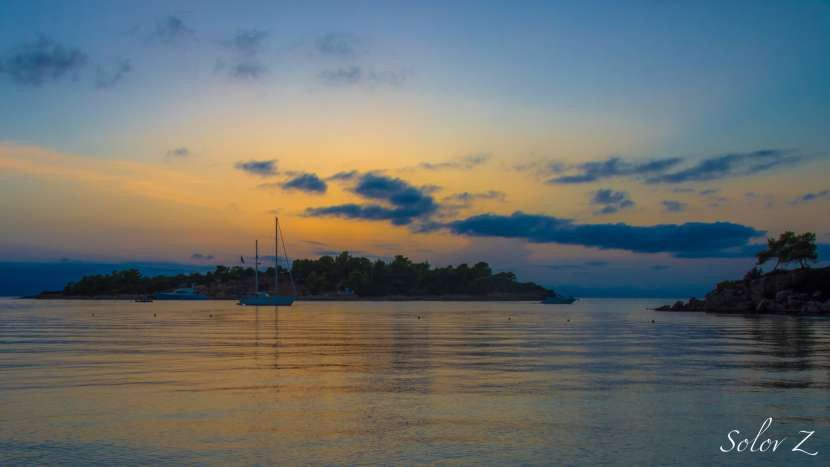
שנת 2020, הקורונה משתוללת בעולם, כל תוכניותינו לנופש בחו"ל עלו בתוהו, והנה הגיעו חגי תשרי וחריץ קטן נפתח בשמיים לתנועה לחו"ל, אמרנו מה פתאום, נחכה לדקה ה-90 ואז נזמין נראה איך הכל מתנהל נזמין בינתיים חופשה באילת, ואז בום! דיבורי סגר. אין סיכוי שאנחנו שורדים עוד סגר עם הטרור בני השנתיים ועשר (תאומים בני 2.10 כן?) אז הזמנתי טיסה לסלוניקי (הכי זול שהיה, שגם לא היה זול! עם ישראייר לכיפור וסוכות), לא עברו יומיים מההזמנה ואופס! ילד חיובי בגן, כל הגן לבידוד! עד ערב כיפור, זהו הלכה הטיסה לסלוניקי (מזל שזה קרה בדיוק ביום האחרון של כיסוי חוק הגנת הצרכן אז הצלחנו לבטל בלי נזק משמעותי לכיס).
אחרי 24 שעות בבידוד עם הילדים בעלי היקר מודיע- תוציאי אותנו מפה! אין סיכוי שנשרוד גם שבועיים בידוד וגם סגר הצילו!!!
כאילו אלוהי המזל שמע אותנו מלמעלה ואלעל הודיעו שהם חוזרים לטוס מה-1.10, בהתחלה חשבנו להזמין עד אחרי סוכות (סגר) 11.10, אבל מבחינת מחירים היה שווה להאריך עוד קצת ובסוף הזמנו עד ה-16.10 בעלות של 450$ לכרטיס לאתונה, ומרגע ביצוע ההזמנה ירדנו למחתרת! יציאה החוצה ללא טלפון כדי שחלילה לא נחטוף "איכון בידוד", סופר- רק משלוחים ככה עד הטיסה.
אז מה צריך בשביל לטוס בעידן הקורונה? כל מדינה החליטה לעצמה מה לדרוש, מבחינת כניסה ליוון היינו צריכים למלא טופס PLF של ממשלת יוון ולהצהיר מתי מגיעים והיכן לנים, בדיקת קורונה עד 72 שעות מהנחיתה והצהרת יציאה מהארץ באתר משרד הבריאות פשוט לכאורה לא?!
בגלל כל הדיבורים כן\לא סגירת נתב"ג עד ה-30.9 לא ידענו אם אכן טסים, מה שאתגר אותנו מבחינת הזמנת מקום לינה (לימים הראשונים) ורכב, וכמובן אריזת מזוודות. כך יצא שב30.9 היינו צריכים לריב עם אסותא שישלחו לנו תוצאות בדיקת קורונה באנגלית, למצוא רכב במחיר סביר (כי כשמזמינים מהיום למחר המחיר לא אטרקטיבי) וכמובן לארוז את עצמנו ושני צוציקים! לא נורא העיקר לברוח!
אז הנה סיפור הבריחה שלנו מהסגר:
1.10- הטיסה הראשונה של אלעל מתעכבת מאוד!
7:00 אנחנו בשדה, הטיסה צפויה להמריא ב-10:00 בבוקר, טיסה ראשונה של אלעל לאתונה אחרי חל"ת ממושך, הצ'ק אין מבוצע ע"י הטייסים עצמם, מציגים את כל המסמכים שולחים מזוודות וקדימה! אחרי 20 דקות אנחנו כבר בדיוטי השומם, מבדרים את הצוציקים ובן דודם הקטן= סה"כ 4 הורים ו-3 צוציקים בני שנתיים +.
אנחנו בשיא ההתרגשות, הילדים מתלהבים שאוטוטו הם טסים במטוס! מתיישבים במושבים מתכוננים להמראה ובום! תקלה טכנית. הטייס מודיע שזו תקלה קטנה שמיד תטופל, מיד הופך ל-3 שעות בתוך המטוס- מזל שקיבלנו דרימליינר ככה היה לכולנו בידור. כשסוף סוף מודיעים שהתקלה תוקנה מתיישבים חזרה בהתלהבות ושוב, תקלה! צריך להחליף מטוס! איזה מזל נאחס, גם לנו וגם לאלעל. לא נורא מהשדה הזה אנחנו לא מתפנים עד שנטוס! ואכן בשעה טובה המטוס החולף ואנחנו ממריאים לאתונה בשעה 15:00, סה"כ 4 וחצי שעות עיכוב, העיקר ברחנו.
בעידן הקורונה מתבצעת בדיקה מדגמית של נכנסים ליוון, לנו בקושי הסתכלו על המסמכים וכלל לא עשינו בדיקה, זה לא אומר שלא עושים פשוט כנראה היה לנו מזל ולשם שינוי, לא התעכבנו מעבר לנדרש.
למרות זאת העיכוב הזה עולה לנו ביום שלם! במקור היינו אמורים לנחות ב-12:00 בצהריים מה שמשאיר לנו יום שלם כמעט, שכרנו דירה בעיירה פורטו היילי שבפלפונס (3 שעות נסיעה מאתונה), בעל הדירה המקסים הסכים להזמנה הניתנת לביטול על ה-30.9 (קשה למצוא דירות עם אופציות ביטול ברגע האחרון בימי קורונה, כולם רוצים עד 48 שעות), בהתחלה עוד חשבנו שנספיק להגיע לשם היום, אולם נחתנו לקראת חמש עד שיצאנו, קנינו סים מקומי (של vodaphone) והבנים נסעו להביא את הרכב (שכרנו מ-green motion שיושבים 20 דקות נסיעה מהשדה) השעה היתה כבר 20:00, חושך! אין סיכוי שנסע עכשיו 3 שעות בכבישים לא ידועים- מניסיון שלנו שנה שעברה בפיליון ביוון, הכבישים הכפריים יכולים להיות מאוד מאתגרים במיוחד בלילה. הצוציקים כבר מעולפים, שמנו להם פיג'מה ומיד נרדמו ברכב. בהחלטה של רגע אנחנו מודיעים לבעל הדירה שנגיע מחר, ומזמינים לנו 2 חדרי משפחה במלון מעאפן ליד אתונה, כשהגענו לא היו 2 חדרי משפחה, רק אחד אז אנחנו ישנו בחדר משפחה והזוג השני (עם ילד אחד בלבד) ישנו בחדר רגיל, כולנו כלכך שפוכים מעייפות שבאמת לא אכפת לנו העיקר לישון! זהו ברחנו מהסגר! הכל טוב :)
2.10-חופש!
בעונה זו של השנה הזריחה ממש מאוחרת (7:30), התעוררנו בשש וחצי וזכינו לראות את הירח מציץ מבעד לחלון. בשבע כבר ירדנו למטה לחכות לארוחת הבוקר שמוגשת בשבע וחצי. כולנו במצב רוח מרומם! למרות שפספסנו לילה בוילה המפנקת שהזמנו, זה ברור לכולנו שאתמול לא היינו במצב לנסוע 3 שעות אל הלא נודע. שבעים ומוכנים התחלנו בנסיעה הארוכה שלנו היום לכיוון הפלופונז והעיירה פורטו היילי.
הפלפונז הוא חצי אי גדול בדרום יוון, פירוש השם ביוונית הוא Pelopos nesos, כלומר "האי של פלופס" (גיבור מן המיתולוגיה היוונית). בהתאם לפירוש מכונה חצי האי לעיתים הפלופונסוס (מיודע - "האי של פלופס"). שטחו של חצי היא הוא 21,556 קמ"ר, ב-1893 נפתחה תעלת קורינתוס אשר הפרידה את פלופונסוס באופן מלאכותי מהיבשת, להוציא גשר מעל התעלה. ב-2004 חובר חצי האי לצפון יוון גם על ידי בניית גשר ריו-אנטיריו בצד המערבי של הפלופונס (מתוך ויקיפדיה).
צפויה לנו דרך ארוכה אז החלטנו לעצור בתעלת קוריתוס (כמו כל תייר ממוצע), הדרך עד התעלה עוברת בכביש אגרה מהיר ומצויין עם שפע תחנות רענון. אנחנו ירדנו מהכביש המהיר כדי למצוא את גשר הולכי הרגל שממנו ניתן לצלם את התעלה, אבל לא ממש הצלחנו אז במקום נסענו לאיזור ה-Istma של התעלה היכן שהיא נפתחת למפרץ הסארוני.
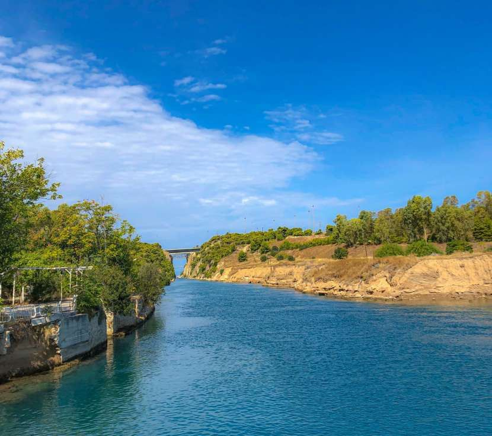
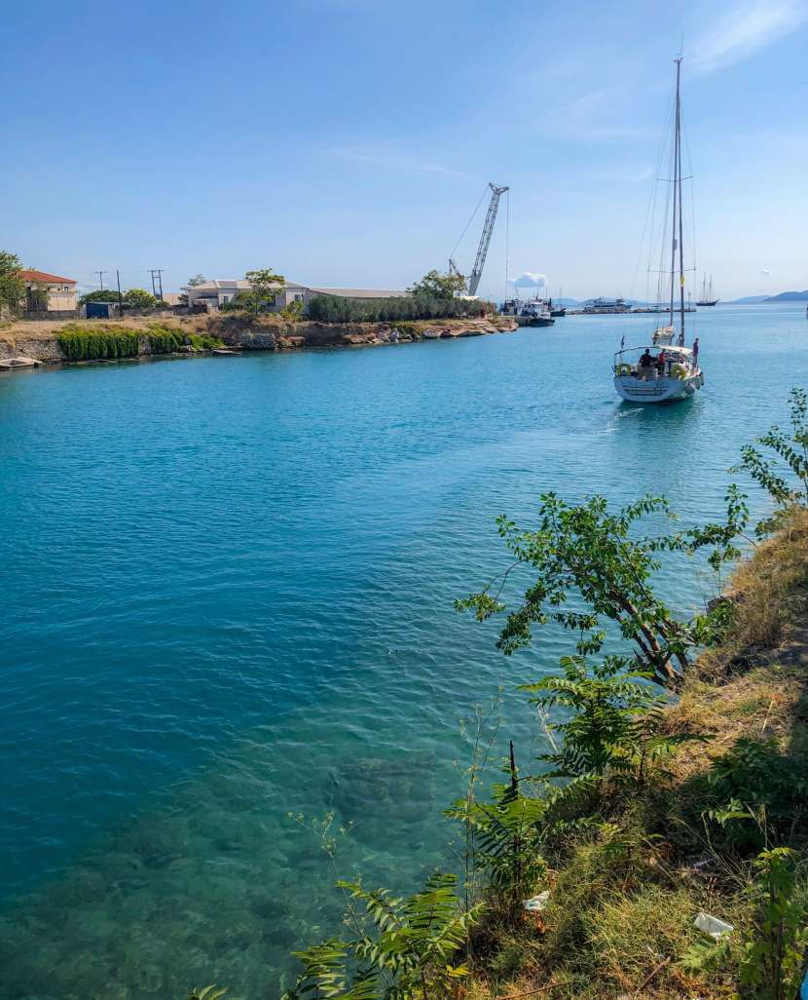
התמקמנו לצהריים במסעדה על גדת התעלה, מי התעלה כחולים וצלולים. בין שתי הגדות מחבר גשר שנמצא מתחת למים בכדי לאפשר מעבר סירות, ואכן אנו זוכים למחזה של עשרות סירות נכנסות בזו אחר זו לתוך התעלה. כעבור כמה דקות הגשר עולה מעל פני המים והולכי הרגל והמכוניות יכולים לחצות, כעבור כחצי שעה שוב הגשר יורד והסירות שנכנסו לתעלה עושות את דרכן חזרה.
הצוציקים מתרוצצים בהנאה ומתרשמים מכל סירה ששטה, איזה כיף שאנחנו לא בסגר! שבעים ומרוצים המשכנו בדרכנו, הצוציקים נרדמו לשנת הצהריים שלהם ברגע שהתחלנו בנסיעה לכן החלטנו להמשיך עד הוילה ללא עצירות.
הדרך לפורטו היילי מצויינת, מתוחזקת ורחבה (אחרי הדרכים בפיליון הופתענו לטובה). עברנו את העיירה פורוס והתחלנו לעלות בהרים, ואיזה נופים! השמיים הכחולים ההרים הירוקים והים הכחול והצלול למטה, מדהים! בכל פסגת הרים שאנחנו רואים סביבנו יש תחנות רוח- מרשים ביותר.
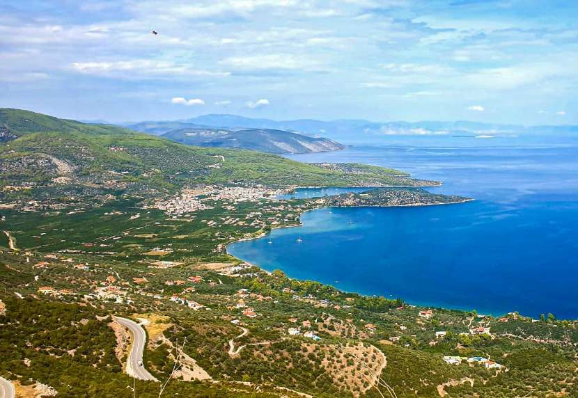
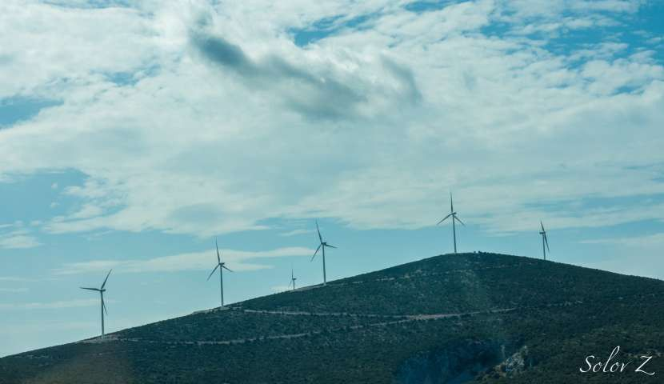
נסיעה של עוד כשעתיים מביאה אותנו לעיירה הקטנה פורטו היילי, אנחנו מעדיפים להתמקם בוילה וממשיכים- הוילה שלנו big blue villa שהוזמנה דרך airbnb, בעל דירה חביב בשם ליאונידס, שהבין את מצב הקורונה והסכים לשנות את תנאי ההזמנה לביטול חינם עד ה-30.9 (יום לפני הגעתנו), הודענו לו אתמול שנגיע מאוחר בלילה וגם זו לא היתה בעיה מבחינתו אולם בסוף החלטנו שלא לנסוע כאמור. הוילה הוזמנה ל-4 לילות (לילה אחד הלך לפח בגלל איחור הטיסה). אנחנו נוסעים בעזרת הוויז וגוגל מפות ששלח לנו המארח אבל אין סיכוי שהיינו מוצאים את הוילה הזו אתמול בלילה ובחושך! בכדי להגיע לוילה יש לפנות לדרך עפר, ללא שילוט כלל! במזל אחרי שעשינו כבר כמה סיבובים המאחרת ראתה אותנו ויצאה לפגוש אותנו רק כך מצאנו את המקום!
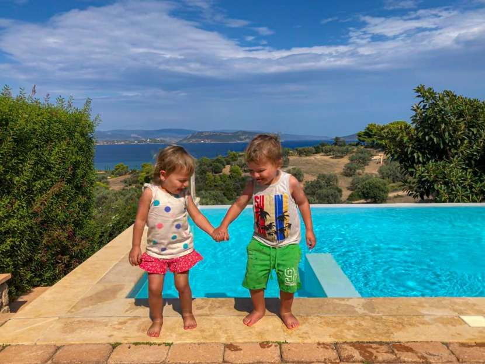
הוילה מדהימה! מאובזרת חדישה ומטופחת, בריכת אינפיניטי עם נוף משגע לים, איזור מנגל מושקע שבעלי התאהב בו מייד, והמון פרטים קטנים וקישוטים שהופכים את המקום לנעים מאוד.
אנחנו מיד שמים בגדי ים ומסתערים על הבריכה, המים קפואים אבל בחוץ חמים! אין כמו צינון טוב אחרי נסיעה ארוכה ואנחנו עדיין באופוריה שהצלחנו לברוח מהסגר.
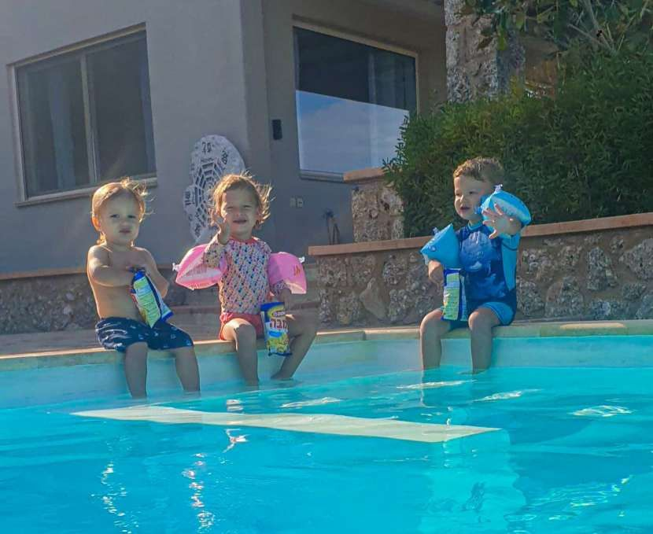
רעננים מספיק ורעבים מאוד יצאנו לעיירה לחפש מקום לאכול, העיירה קטנטנה, יש לה מרינה ענקית עם שפע יאכטות, שילוב סוף העונה והקורונה מאוד מורגש, אין כמעט אנשים, הרבה מהמסעדות סגורות, מצאנו מסעדה בינונית ליד המרינה, עשינו סיבוב וקפצנו להצטיידות בסופר. מבחינת הקורונה ביוון אין צורך לעטות מסיכות בחוץ אולם חייב בפנים והקנסות מאוד גבוהים, במסעדות אסור לשבת יותר מ-6 אנשים בשולחן וכל המלצרים עם מסיכות, על כל שולחן בקבוק אלכוג'ל.
חזרנו לוילה עייפים שבעים ומרוצים :)
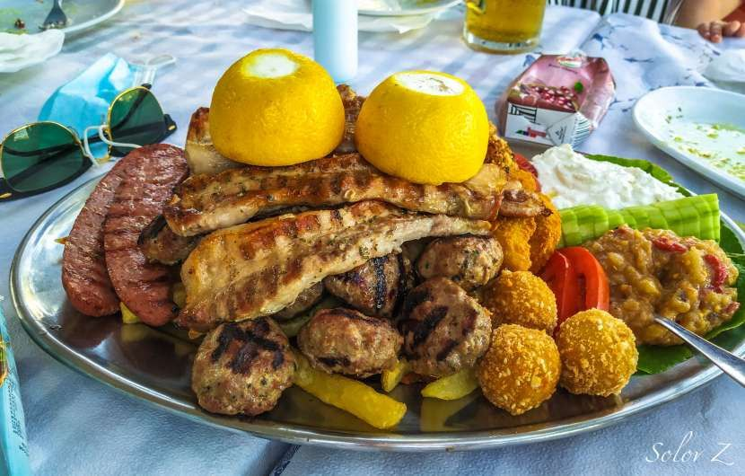
3.10- אחח איזה חוף
קמנו בשבע בבוקר, עדיין חושך בחוץ, מכינים ארוחת בוקר באיזי ואז אנחנו רואים את הזריחה מהחלון- ואו פשוט מהמם!
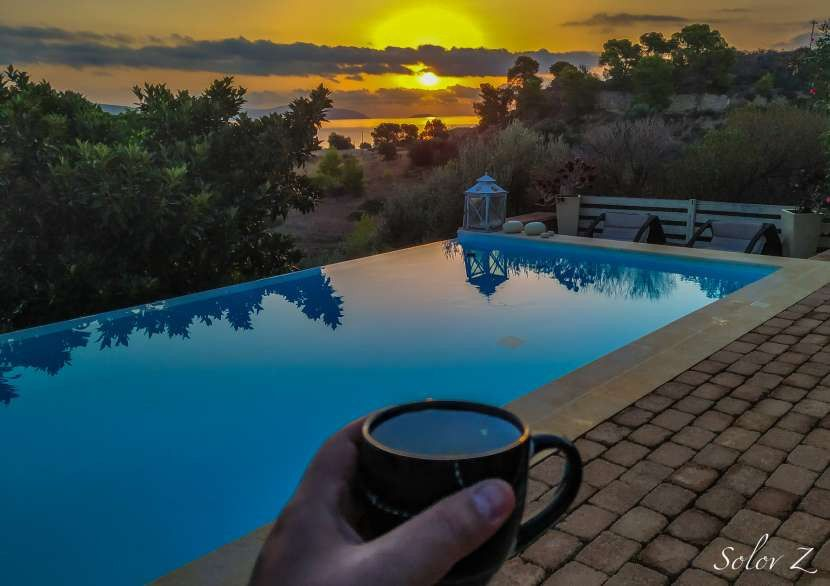
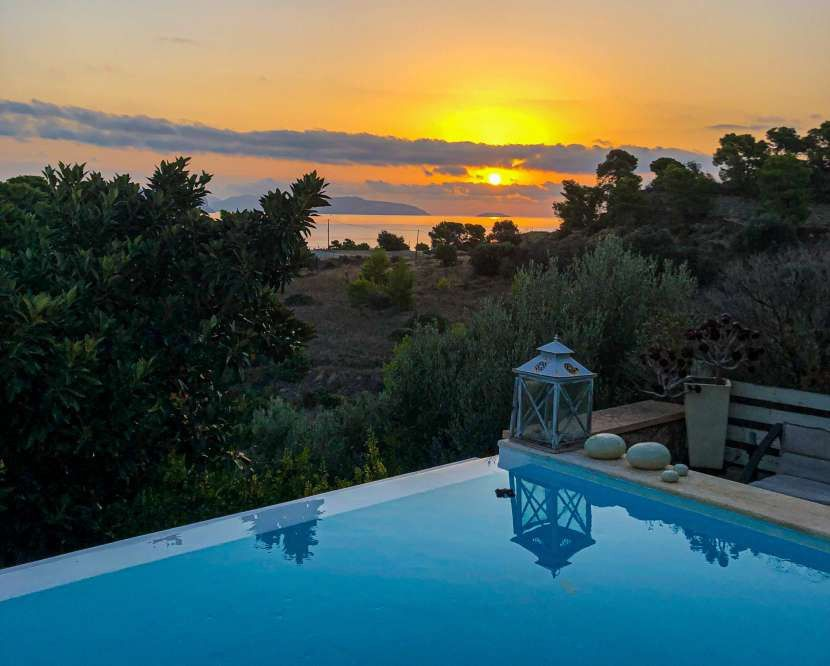
את ארוחת הבוקר אנחנו אוכלים בחוץ ליד הבריכה, אחחח איזה כיף, אווירת חופש מושלמת. היום אנחנו הולכים לחוף שבעל הדירה המליץ- 5 דקות נסיעה מהדירה חוף- Paralia Kounoupiou. נוסעים בין הוילות המפוארות סביב בדרכים צרות מאוד, עד שמגיעים לסוף הדרך וממש למטה נמצא החוף, ואיזה חוף! לא יבייש שום חוף בתאילנד! מים בצבע טורקיז צלולים צלולים, גבעות ירוקות מסביב, איים קטנים באופק פשוט משגע! גולת הכותרת- אנחנו לבד! החוף שלנו בלבד!
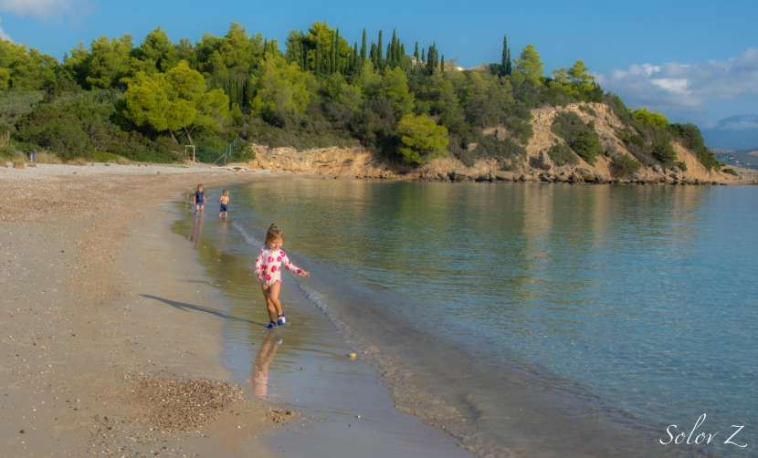
הצוציקים בעננים, שוחים צוללים מקפצים מחפשים דגים ואנחנו לא מפחדים לתת להם לקפוץ חופשי כי המים די רדודים, שלווים בלי טיפת גלים כלל. ככה העברנו 3 שעות של כיף וחזרנו לוילה לארוחת צהריים על האש- איך לא? בעלי חייב לחנוך את עמדת המנגל המטורפת. כשהילדים משנ"צנצים אנחנו נהנים בבריכה.
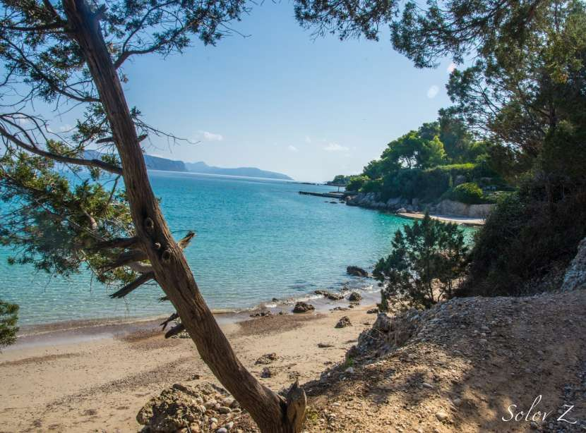
לאחר השנ"צ אנחנו שוחים עוד קצת בבריכה ואז יוצאים לאכול ארוחת ערב באחרת הטברנות המומלצות ע"י בעל הדירה- ΤΑΒΕΡΝΑ ΤΗΣ ΓΙΑΓΙΑΣ, הטברנה נמצאת כעשר דקות נסיעה מהוילה במפרץ יפיפה ולידו חוף- Παραλία Χινίτσας. המסעדה די תיירותית (וגם עכשיו בסוף העונה ועוד עם קורונה די מלאה), האוכל סביר לא וואו, המנה הכי טובה שלהם היתה הפסטה פירות ים.
בינתיים הצוציקים יורדים לחוף לזריקת אבנים לתוך המים. המקום פשוט משגע בשקיעה, הכל נצבע בגווני זהב ואדום, ממול אי קטן עם סירה עוגנת פשוט קסום!
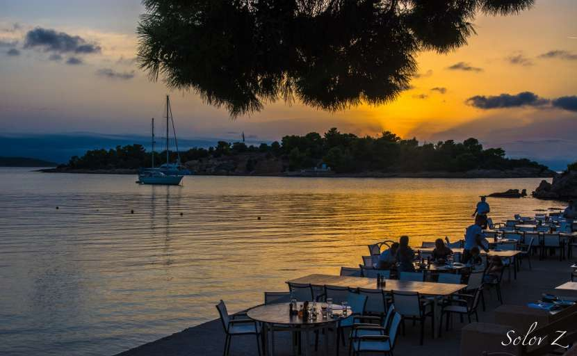
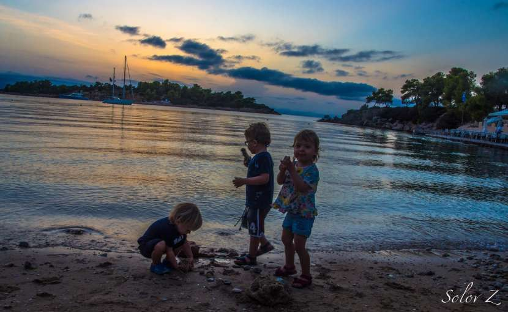
החיסרון היחיד במקום (בפלפונז בכלל) הוא שפע היתושים שתוקפים לעת ערב ובלילה, סיוט.
עוד יום מוצלח הגיע לסיומו.
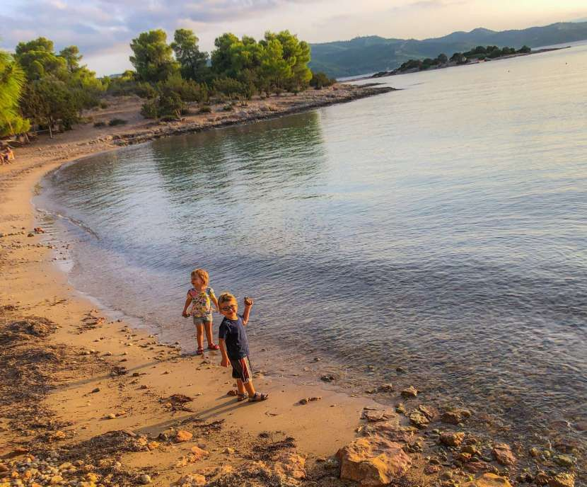
4.10- עוד יום רגוע
גם הבוקר זכינו לצפות בזריחה מקסימה! לאחר ארוחת הבוקר החלטנו לנסות חוף אחר שבעלת הדירה המליצה, אולם כשהגענו לשם לא ראינו שום דבר ראוי אז החלטנו לחזור לחוף קנופי שהיינו אתמול- מה שאוהבים לא מחליפים.
היום יום ראשון ולאט לאט מגיעים עוד אנשים לחוף (מזל שאנחנו עם הקטנים מגיעים יחסית מקודם). כמו אתמול העברנו את הזמן בכיף וחזרנו לוילה לשנ"צ לקטנים וטבילה בבריכה לגדולים.
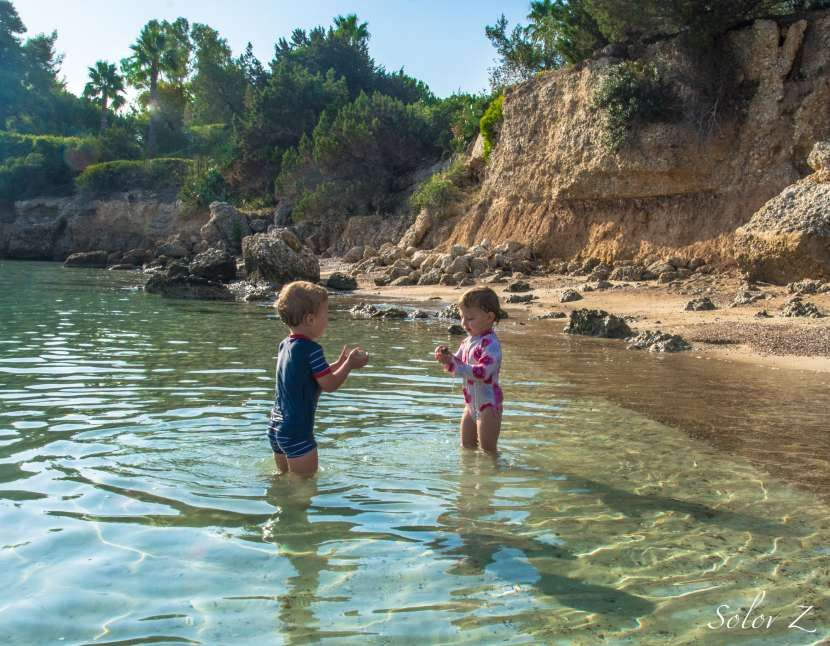
אחר הצהריים החלטנו לבקר שוב בעיירה פורטו היילי, המליצו לנו על המסעדה salt and pepper והחלטנו לנסות. מדובר במסעדה די פשוטה אבל האוכל היה פשוט מושלם! אני חושבת שזו הוכתרה מסעדה הכי טעימה בטיול שלנו! אוכל מקומי, טעים טעים החל מרולים של עלי גפן, שיפודים, כדורוני גבינה, פירות ים, תענוג! משם טיילנו לאורך הכביש (כי מדרכות ביוון לא משהו אם הן קיימות בכלל), הסתכלנו על המוני הסירות שעוגנות במפרץ וקינחנו בגלידה טעימה במיוחד. זהו חזרה ללילה האחרון שלנו בוילה הזו, מחר אנחנו עוזבים להרים :).
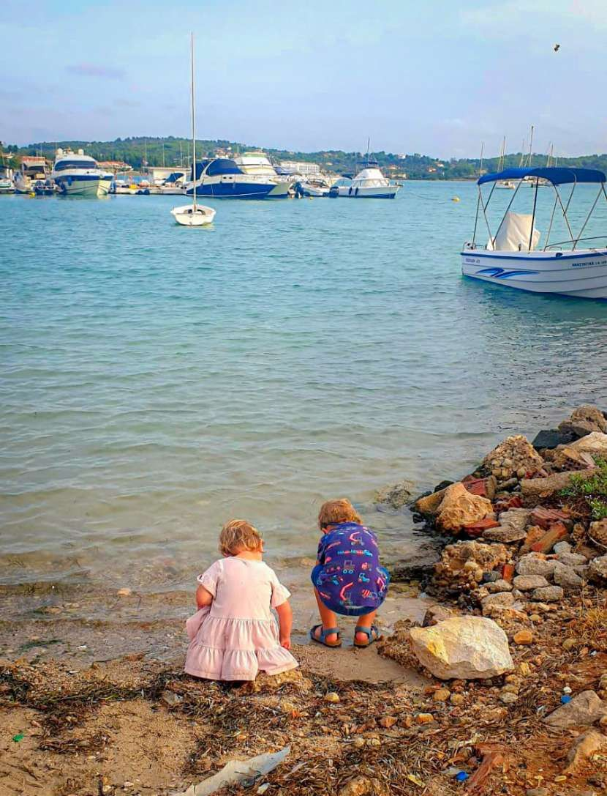
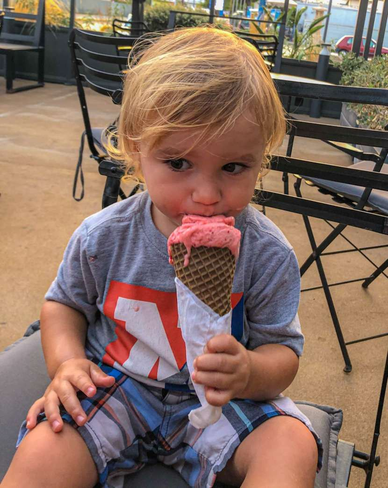
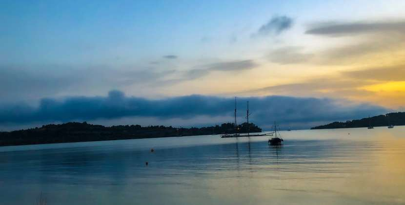
5.10- עוד יום נסיעה
בכל הטיולים הקודמים שלנו ישבתי ותכננתי מסלול לפרטי פרטים כולל מקומות לינה, עכשיו בטיול בריחה ספונטני בעידן הקורונה לא באמת תכננו לעומק, בעיקר רצינו פשוט לברוח ולזרום עם הטיול. אחרי שמיצינו את פורטו היילי החלטנו שכדאי לנו פשוט לנסוע לאי לפקדה (4 שעות נסיעה) ולהתמקם שם, כך תכננו את המשך המסלול- לינה באזור ההרים לכיוון העיר פטרס (ליד גשר ריו אלטו) ל-3 לילות ומשם ללפקדה.
אתמול הזמנו וילה בעיירה פירגקי (Prigaki) עיירה קטנטנה בהרים ליד העיירה דיאקופטו, הוילה- Traditional Luxury Villa ARMONIA.
כמובן שאי אפשר להיות בפלפונז מבלי לבקר בעיר נאפפליו, שאומרים שזו העיר הכי יפה ביוון, וכך החלטנו לנסוע לשם.
קצת על נאפפליו: מדובר בעיירת נמל, בחלק הצפוני ביותר של מפרץ ארגוליס. היא שימשה כעיר הבירה הראשונה של יוון המודרנית החל משנת 1829 - במהלך מלחמת העצמאות היוונית, ועד 1834. העיר העתיקה של נאפפליו בנויה ברובה על גבי חצי אי שבולט אל תוך מפרץ ארגוליס ויוצר מפרץ קטן נוח לעגינה הנקרא מפרץ נאפפליו. החלק העתיק של העיר, הקרוי אקרונאופְֹליה (Ακροναυπλία), הוקף חומות עוד לפני התקופה הקלאסית, ובהמשך נוספו ביצורים על ידי הביזנטים, הפרנקים, הוונציאנים, והעות'מאנים. העיר נכבשה בשנת 1212 והפכה לחלק מנסיכות אכאיה. היא נמכרה בשנת 1388 לוונציאנים, והם כינו אותה "Napoli di Romania" - נאפולי של האימפריה הביזנטית. בשנת 1540 נכבשה על ידי האימפריה העות'מאנית, והפכה למרכז אזורי. העות'מאנים החליפו את שמה ל- "Mora Yenişehri" - העיר החדשה של מוריאה (הפלופונסוס). בשנת 1685 נכבשה שוב על ידי הוונציאנים, אשר חיזקו אותה ובנו את מצודת פלמידי על גבעה החולשת על העיר. זהו המבנה הגדול ביותר שנבנה על ידי הוונציאנים מחוץ לגבולות איטליה.בשנת 1715 נכבשה העיר מחדש על ידי העות'מאנים. במלחמת העצמאות היוונית הייתה נאפפליו מבצר מרכזי של העות'מאנים, והיוונים צרו עליה כשנה, וכבשו אותה בנובמבר 1821. יואניס קפודיסטריאס, שהיה למושלה הראשון של יוון המודרנית, הגיע אל נאפפליו ב-7 בינואר 1828, והייתה זו הפעם הראשונה בה דרכה רגלו על אדמת יבשת יוון. בשנת 1829 הכריז קפודיסטריאס על העיר כבירת יוון. ב-9 באוקטובר 1831 נרצח קפודיסטריאס בכנסייה בעיר, ובשנת 1834, לאחר כינונה של ממלכת יוון, העביר המלך אותון את הבירה לאתונה (מתוך ויקיפדיה).
היום מזג האוויר נוראי, חם והביל ואפס ראות, כאילו מטיילים בתוך סאונה. אחרי נסיעה של שעה וקצת מפורטו היילי, הגענו לנפפיליו, חנינו ליד המצודה והתחלנו לשוטט בין הסמטאות היפות- אך הכמעט ריקות בעידן הקורונה.
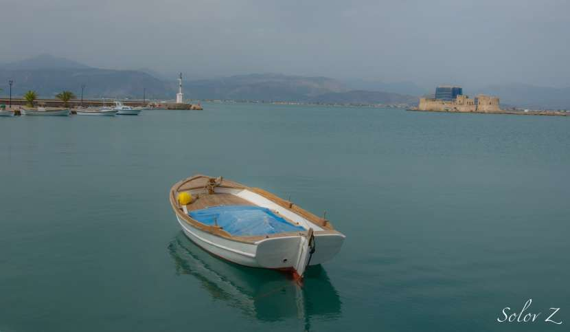
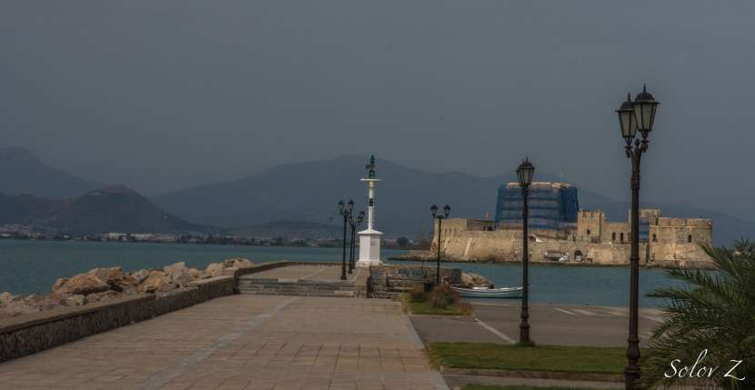
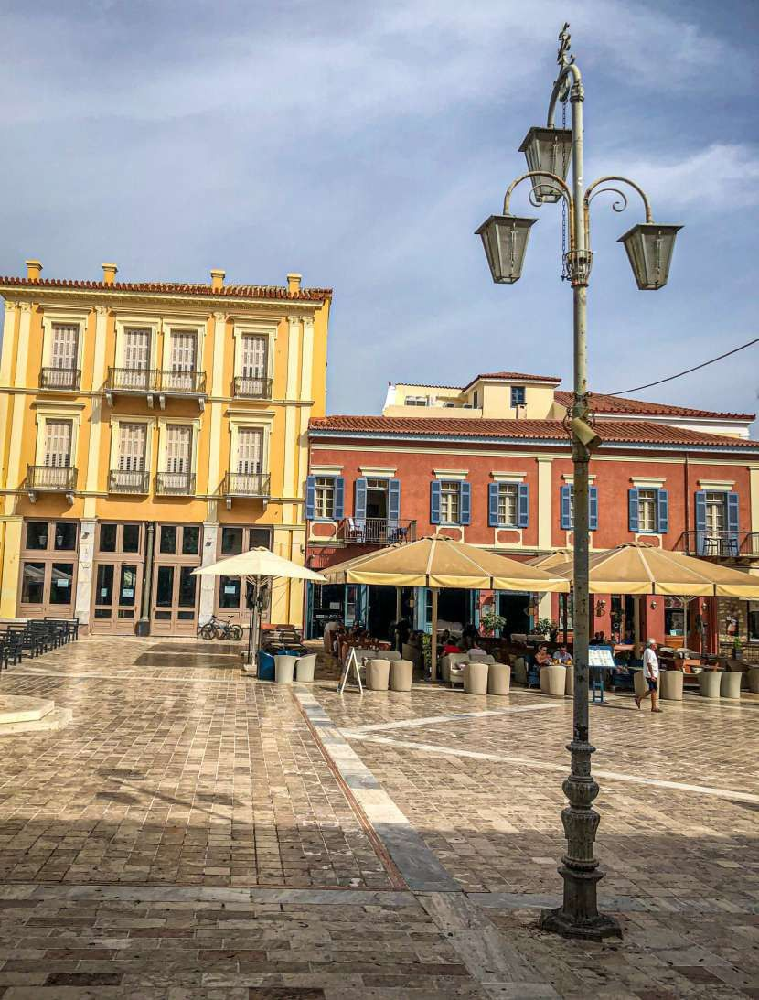
עצרנו לנשנוש צהריים בכיכר המרכזית, הילדים התרוצצו שם בכיף, משם הלכנו איתם לפארק שעשועים קטן שנצא בקצה הטיילת (ליד העליה למצודה), העיר יפה אולם לא כל כך התרשמנו, אולי כי איננו חובבי ערים או כי פשוט היה כלכך חם ולא נעים לטייל בחוץ שרק רצינו שזה יגמר. הבנים קנו לעצמם נרגילה בחנות טבק וכבר נורא רוצים לנסוע ולבדוק אותה בשילוב אויר הרים צלול כיין…
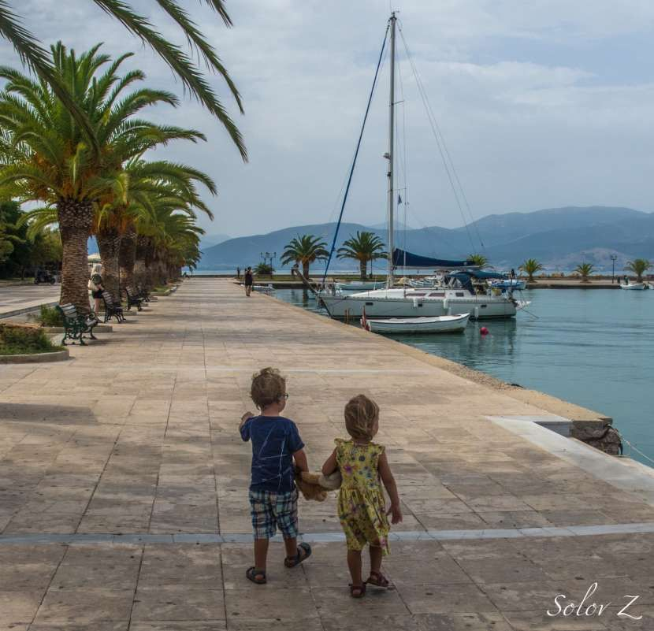
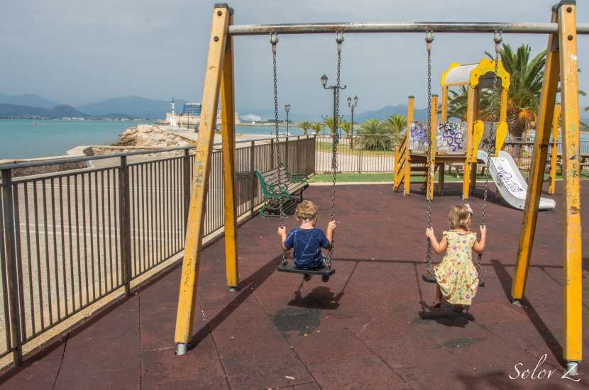
ליד נפפיליו יש את אתר העתיקות המרשים מיקנה, אולם הצוציקים נרדמים מיד כשנכנסים לרכב ובחום ששורר היום זה יהיה פשוט סיוט לטייל שם אז אנחנו מותרים ושמים פעמנו לצד המערבי של הפלפונז דרך הכביש המהיר. נורא רצינו גם לעצור באגם דוקסה אבל זה פשוט יוצא רחוק מידי- עוד כשעה ומשהו מנפפליו ומשם עוד שעתיים לוילה- עם פעוטות זה ממש משימת התאבדות, לא נורא נשאיר גם דברים לפעם הבאה.
נסיעה של שעתיים וקצת מביאה אותנו למרגלות ההרים, אנחנו מצטיידים בקניות בסופר מיד עם היציאה מהכביש המהיר וטרם העלייה להרים כי בפירגקי אין סופרים, למזלנו מצאנו אטליז, די זול. לא סתם אומרים שאסור לעשות קניות כשרעבים, הבנים רוקנו את האטליז ואנחנו תקועים עם כמויות בשר שלא יביישו שבט קרניבורים.
מהסופר לעיירה יש עוד כחצי שעת נסיעה בהרים, הנוף מדהים, קצת מזכיר את רמת הגולן והכנרת שנשקפת מלמעלה, אולם יותר מרשים, ההרים ממש גבוהים ומפרץ קורינתוס הוא ענקי! חבל רק שהיום כלכך הביל שלא רואים טוב.
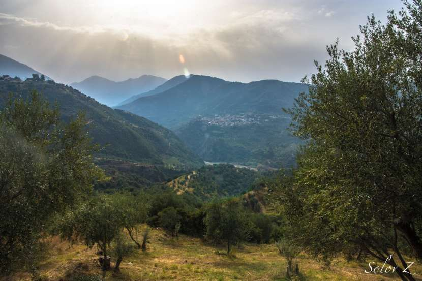
הגענו לוילה, בית כפרי ענקי! בקומה העליונה 4 חדרי שינה, למטה סלון ענק ומטבח ולמטה במרתף עוד קומת משחקים שלמה! הצוציקים מיד הסתערו על כל הצעצועים, בזמן שהבנים הלכו להכין את טונות הבשר שהם קנו.
בוילה יש גם בריכת שחיה שאינה בשימוש כרגע ודי מוזנחת, אבל הוילה כלכך גדולה שאנחנו אפילו לא מתקרבים לאיזור הבריכה. סביב הוילה יש מטע תפוחים ואנחנו זוכים לסלסילת ריבות תוצרת בית וכמה קילו של תפוחים אורגניים טעימים מאוד!
בעל הדירה סיפר לנו שבחורף המקום מושלג ושלגים ראשונים צפויים לקראת סוף נובמבר, בינתיים אנחנו נהנים מאוויר הרים צלול וקריר.
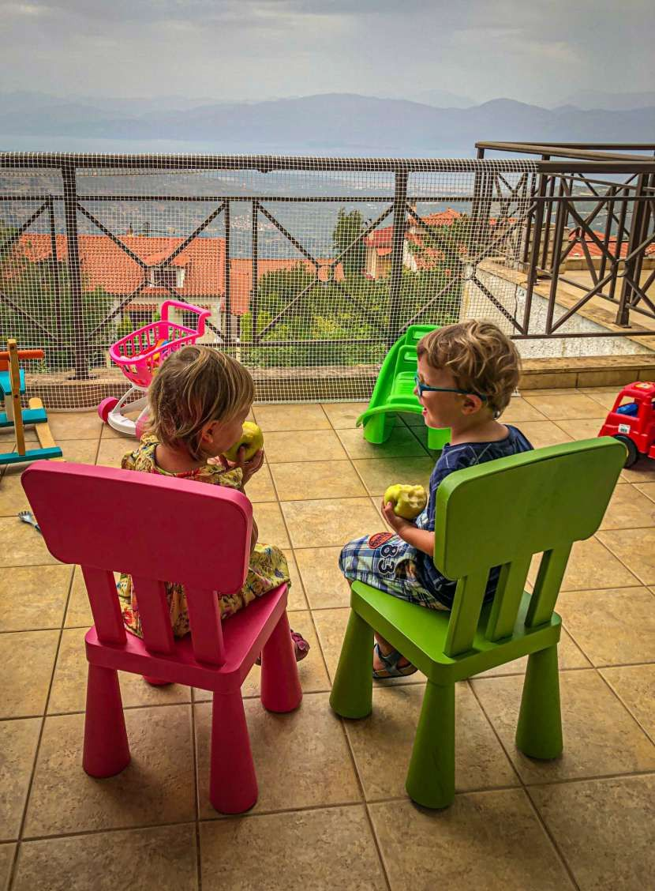
6.10- הרכבת
היום אנחנו נוסעים לעיירה דיאקופטו בכדי לנסוע ברכבת לעיירה קלבאריטה הנמצאת בהרים (770 מ' מעל פני הים). משך הנסיעה הוא כשעה (22 ק"מ סה"כ) ומה שמיוחד הוא שהרכבת עוברת בתוך קניון וריאקוס, כחלק מזמן הטיפוס הרכבת נוסעת בעזרת גלגלי שיניים בכדי לעלות את השיפועים. הנה לוח הזמנים נכון לשנת 2020: 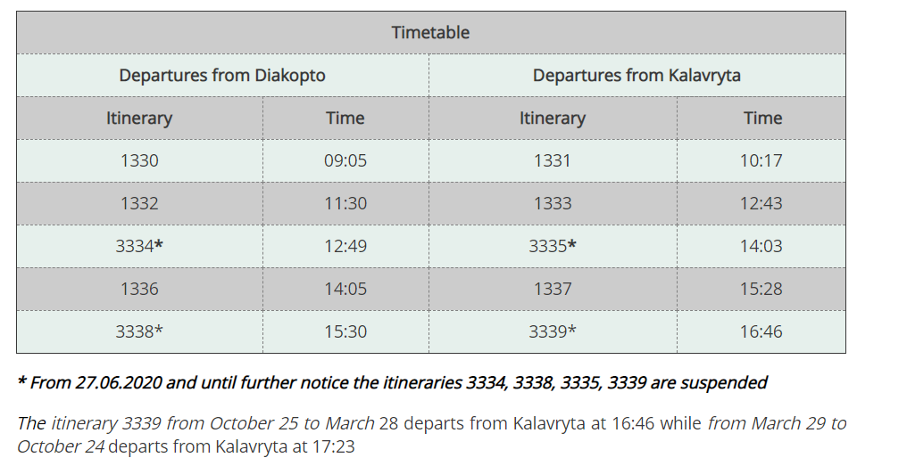
הרכבת יצאה בזמן, היינו רק אנחנו ועוד משפחה ישראלית בקרון שלנו, הצוציקים היו פשוט בשיא האופוריה, בשבילם לנסוע ברכבת זה כמו בשבילנו לנסוע בחללית לירח! כמה אושר והנאה, הם לא הפסיקו במשך כל שעת הנסיעה של הרכבת מלקפץ בין חלון לחלון ולהתמוגג מאושר.
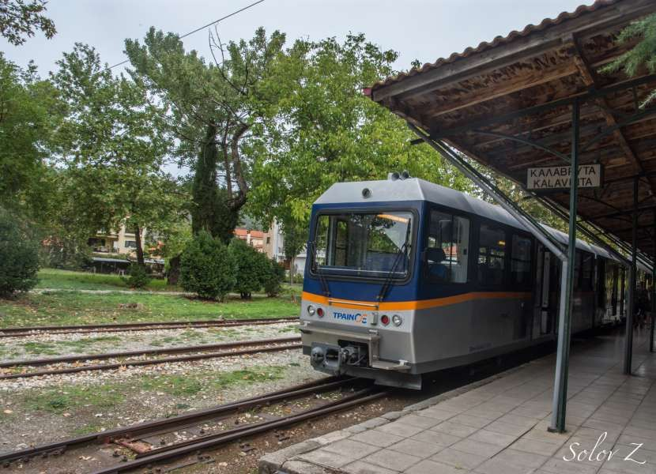
גם אנחנו זכינו לנסיעה מדהימה! הנופים פשוט עוצרי נשימה במיוחד כשהרכבת נכנסת לקניון, מסביב נחלים שיורדים מההרים וזורמים לנחל שלמטה, אין סוף מנהרות וגשרים, באמת חוויה מדהימה. ישנה עצירה קצרה בתחנת ביניים שרבים יורדים שם ופשוט צועדים לדיאקופטו דרך נתיב הרכבת, אולי כשהצוציקים יגדלו מעט.
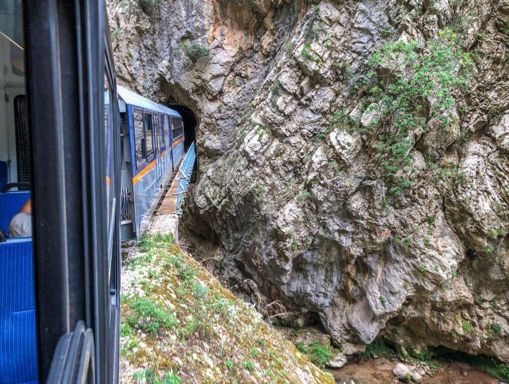
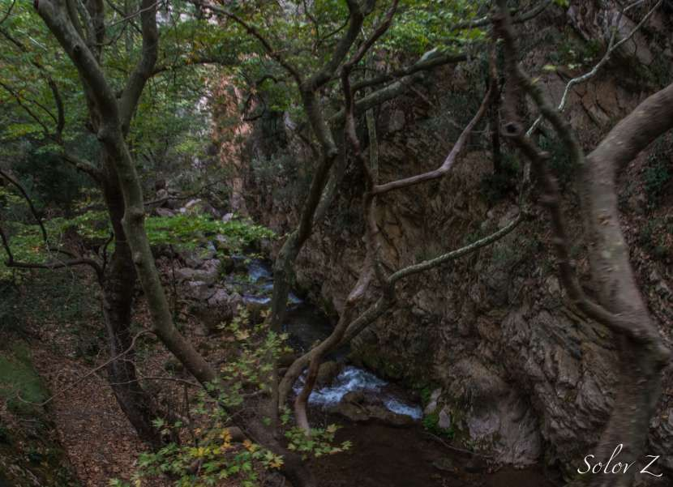
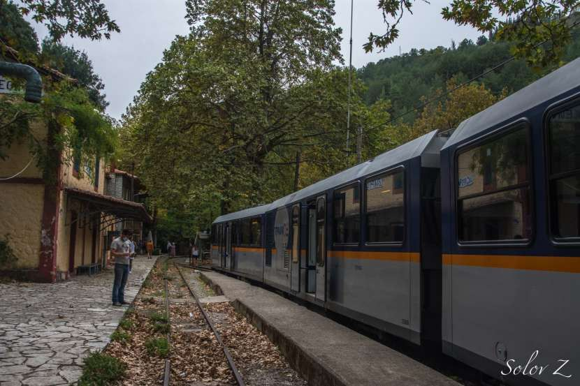
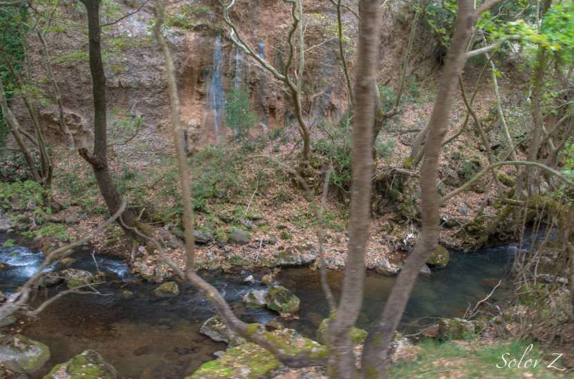
אחרי נסיעה של שעה הגענו לעיירה קלאבריטה, העיירה היא בעצם שער הכניסה לשמורת הוריאקוס שם יש שפע מסלולי הליכה ואפילו סקי בחורף. בסמוך לעיירה יש שני מנזרים- מנזר אגיה לאברה ומנזר מגה ספילאו המפורסם החצוב בסלע, מערת האגמים נמצאת לא רחוק גם כן. העיירה עצמה הינה עיירת נופש קטנה שמפורסמת בגלל הטבח שהנאצים עשו בתושבי העיירה בשנת 1943- כחלק מהקרבות באזור, הגרילה היוונית הוציאה להורג 78 חיילים גרמנים שנפלו בשבי. גנרל קארל וון-לה סוויר (Karl von Le Suire) הגיב בזעם והחליט על פעילות נקם. הוא הורה אישית על הטבח. בבוקר יום ה-13 בדצמבר 1943 חדרו כוחות הוורמאכט לקלבריטה וסגרו אותה מכל העברים. לתושבים נאמר כי הם עומדים להיות מועברים למקום אחר משום שהם משתפים פעולה עם הפרטיזנים. נאמר להם להצטייד במזון ולפנות מיד את בתיהם. התושבים רוכזו בבית הספר המקומי. כעבור זמן קצר הם פקדו על כל התושבים הזכרים מגיל 14 ומעלה להיפרד ממשפחותיהם והבטיחו שלא יאונה להם כל רע. בינתיים בזזו הגרמנים את בתי התושבים והעלו אותם באש. הגברים הוצעדו לשדה מחוץ לעיירה. מכונות הירייה הוסוו בשיחים. כאשר ניתנה הפקודה, החלו מכונות הירייה לירות, ותוך זמן קצר נהרגו 1258 תושבים. רק 13 ניצלו. הנשים והילדים שמעו את היריות ממקום ריכוזם בבית הספר אך לא יכלו לעשות מאומה. רק בערב שוחררו הנשים והלכו לזהות את יקיריהם ולהביאם לקבורה. בחצר בית הספר נמצאת אנדרטה המראה אישה הסוחבת את גופת בעלה בנוכחות ילדיה - נלקח מויקיפדיה.
כשיצאנו מתחנת הרכבת צעדנו בעקבות סימון פסי רכבת על המדרכה לתוך מרכז העיר החביב שהיה מלא בחנויות מזכרות ובתי קפה. גם פה סוף העונה והקורונה השפיעו מאוד על כמות האנשים המשוטטים ברחובות ובמסעדות. בחרנו לנו מסעדה חביבה במרכז לאכול צהריים בסבבה, ומשם לאט לאט צעדנו חזרה ואפילו היה לנו זמן להשתעשע קצת על מסילת הרכבת- חוץ מהרכבת לדיאקופטו אין עוד רכבות והיתה לנו חצי שעה שלמה לשרוף עד שהרכבת תגיע.
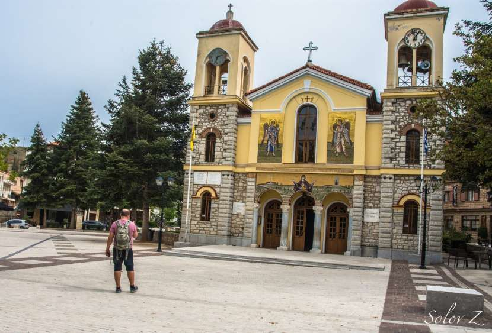
בנסיעה חזרה שניים מתוך 3 הזאטוטים נרדמו מיד, אולם השלישי (הבכור) לא הפסיק לקפץ ממושב למושב מרוב התלהבות. חזרנו לדיאקופטו ב16:30 ומשם חזרנו לוילה שלנו- הצוציק הסורר השלים את חצי שעת השינה שלו.
בוילה החלטנו לתת לבנים שקט כדי להכין לנו עוד ארוחת ערב טעימה ויצאנו עם הצוציקים לחקור את הסביבה. נורא רצינו להיכנס למטע התפוחים שבעל הדירה אמר שפתוח אולם הוא היה סגור, אז טיילנו וראינו ערמונים בשפע, עלי שלכת (שכבר התחילה באזור הזה), הנוף משגע- מפרץ קורינתוס וההרים סביב, למרות שהאויר עדיין הביל הנוף היה מקסים. עצרנו בנקודת תצפית יפיפיה- הנה תמונה:
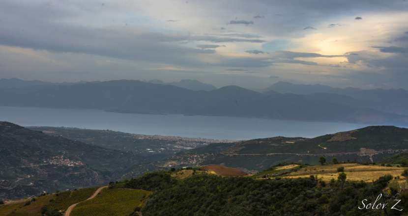
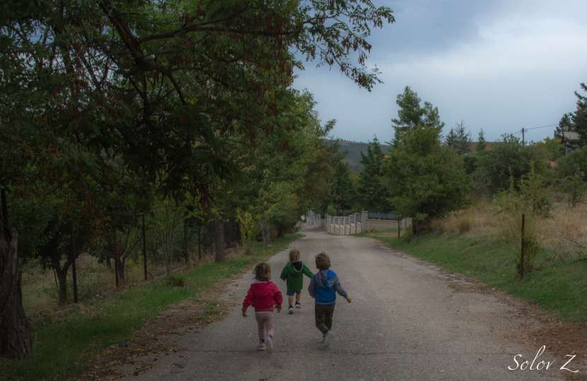
בחזור בזמן שבת דודתי רצה עם הקטן והגדול שלי רץ אחריהם פתאום היא צועקת עצור!!!! הילד המסכן נבהל ממש אבל עצר, מסתבר שנחש בדיוק חצה את דרכו. לפחות הילדים קיבלו שיעור על נחשים ומה עושים כשרואים אחד, עד היום הם זוכרים שעומדים דום ולא זזים וקוראים לאבאמא…
כרגיל קינחנו את היום בעל האש איכותי מאת הבנים שלנו, ועוד יום הגיע לקיצו.
זוכרים שרצינו לנסוע ללפקדה ולכן בכלל החלטנו לעצור באיזור הזה? אז בזמן שיטוט ב-airbnb וחיפוש וילות בלפקדה למחרתיים החלטנו לבדוק את תחזית מזג האויר וחשכו עינינו! גשם, לא יום לא יומיים כככללל השבוע הקרוב גשם בלפקדה! מיד הבנו שאין שום טעם בלנסוע עד לשם כדי להתקע עם 3 טרוריסטים קטנים בדירה (היפה) אבל בגשם.
טוב, סקירה מהירה של מזג האוויר בסביבה מראה על שמש באיזור פורטו היילי, נפפליו וקלמטה. קלמטה נשמע מדהים, בדיוק קראתי על חבל מאני וממש התלהבתי, אבל זה די רחוק מאיפה שאנחנו כעת ומשם לחזור לאתונה גם לא יהיה קרוב (ולא בא לנו לבלות את הבריחה שלנו ספונים ברכב), מה שתרם החלטה לוותר על קלמטה זה שלא מצאנו דירה שמתאימה להרכב שלנו בחבל מאני (אולי לטיול מתגלגל זה יותר מתאים, אנחנו בשלב טיולי הכוכב), אז החלטנו לשוב לסביבת פורטו היילי ולחפש שלו מקומות לינה נחמדים. בסוף החלטנו לחלק את 8 הימים שנותרו לנו - 4 ימים בעיירה קילדה בוילה Loy Loy שנראתה לנו סבירה- פשוטה, לא יקרה ומתאימה להרכב שלנו, ועוד 4 ימים באזור לותראקי שם מצאנו וילה מדהימה על חוף הים- על כך בהמשך.
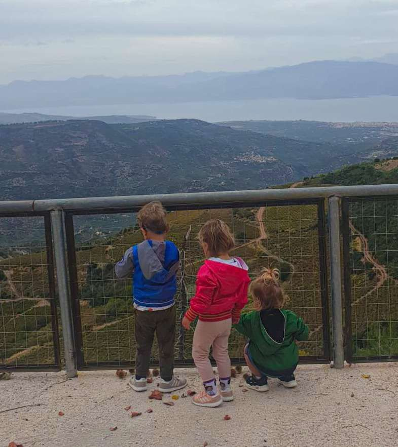
7.10- נוסעים בהרי הפלפונז
לא תכננו הרבה להיום אז החלטנו שנטייל היום במערת האגמים קסטריה שנמצאת ליד קלאבריטה. מדובר בנסיעה לא ארוכה לכאורה, רק שעה וקצת אבל בכביש הררי ומפותל, מצד שני ככה נוכל לתור מעט את הרי הפלפונז.
בעל הדירה המליץ לנו גם על עצירה נחמדה בעיירה הסמוכה לשלנו- Plataniotissa שם יש עץ שצומח בכנסיה עצמה וכן שוק איכרים מרשים, אולם בסוף החלטנו לנסוע ישר למערת האגמים ולא להתעכב שם.
יצאנו לדרך בשעה מוקדמת, השמש בדיוק זרחה וזכינו לנוף מהפנט לאורך הנסיעה, בכל עיקול של הכביש חיכה לנו נוף יפה יותר מהקודם, כפרים קטנטנים פזורים כמו נקודות באופק בין ההרים הנישאים. הכביש מאוד מפותל וצר ולא הייתי ממליצה לנסוע בו במזג אויר סוער או בחורף. הפעם הגענו לעיירה קלאבריטה מכיוון ההרים, ראינו בדרך את האנדרטה לנרצחים במלחמת העולם השניה וכן חלפנו על פני אתר הסקי של העיירה, משם נסיעה של כעשרים דקות והגענו למערה.
הנה כמה תמונות מהדרך:
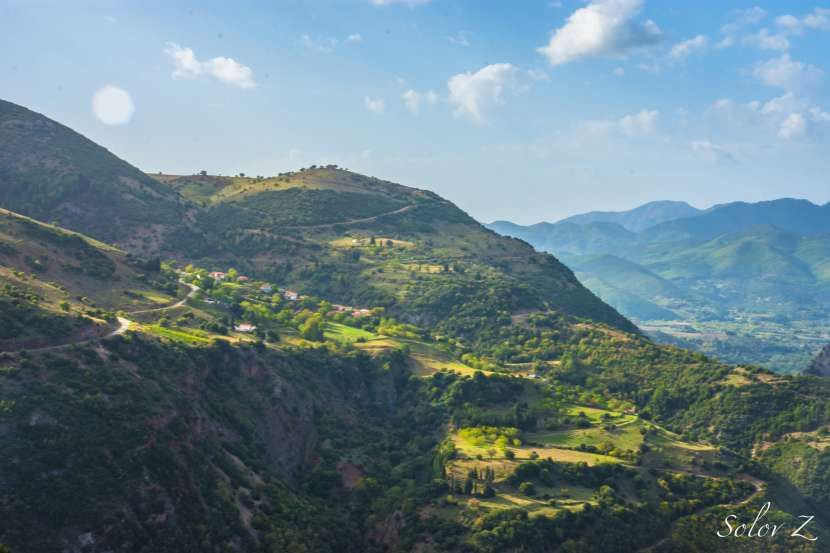
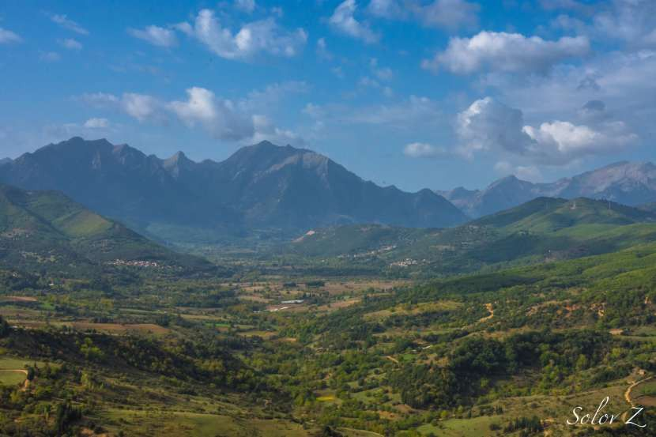
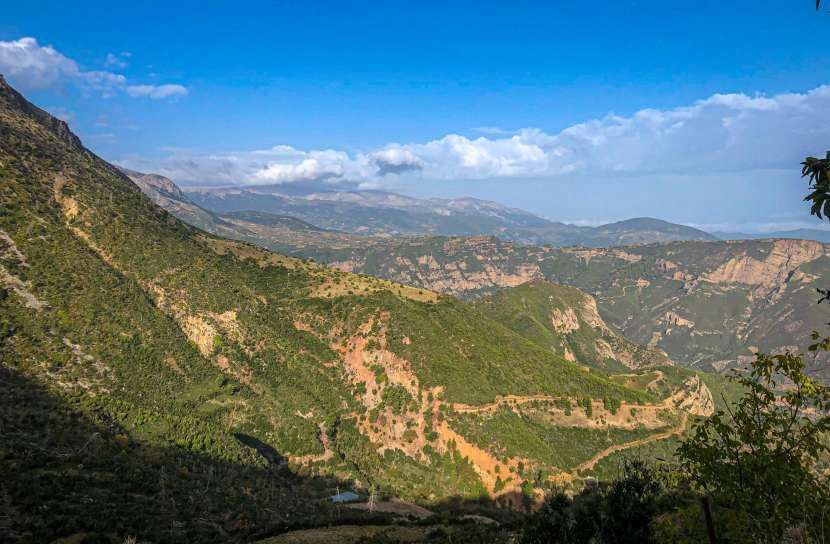
המערה מופתה ב-1964 ונפתחה לקהל ב-1980, במערה יש כ-13 אגמים ומעליהם נטיפים, אורכה של המערה כ-2 ק"מ. הפשרת השלגים מאיזור קלבריטה יוצרים מפלי מים מרהיבים הזורמים בתוך המערה, כך מתחלפים להם המים באגמים בתוך המערה מדי שנה ושומרים עליהם רעננים וזכים. המערה פועלת כל יום מ9:00 עד 16:30 בעלות של 9 יורו למבוגר (על הילדים לא שילמנו).
בעידן הקורונה יש צורך לשים מסיכה וכפפות לאורך כל השהות במערה והצטיידו בג'קט כי בפנים די קריר… אסור לצלם בכלל במערה גם ללא פלאש.
המערה עצמה יפיפיה, תקרה ענקית עם עטלפים מקננים למעלה, נכנסים לתוך מסדרון צר וממש נוגעים בקירות המערה, לצערנו בעונה זו מרבית האגמים די יבשים ואת תופעת המפלים אנחנו לא רואים כלל, אולי בתחילת הקיץ כשיש הפרשת שלגים היא יותר מרשימה. סיכמנו את הביקור במערה בפחות משעה.
משם המשכנו למסעדה שבעל הדירה המליץ לנו- Planētero (הנה קישור לגוגל מפות: https://www.google.com/maps/place/Plan%C4%93tero/@37.9342246,22.1590419,17z/data=!3m1!4b1!4m5!3m4!1s0x135fdc6b5739d90b:0xc9547cd9a710e9a5!8m2!3d37.9342246!4d22.1612306
המסעדה נמצאת עשר דקות נסיעה מהמערה, מדובר בחווה קטנה עם טווסים, ברבורים בריכות דגים ושפע פרחים ודשא שהקטנים יכלו להתרוצץ בכיף, בעיירה עצמה עובר נחל יפיפה. האוכל לא רע בכלל מקומי וטעים, כמובן שבעונת הקורונה היינו היחידים שסעדנו במקום, זה לא הפריע לנו להעביר שעתיים בכיף שם ולהנות מהמקום האווירה והאוכל. כששבענו הלכנו קצת לנחל הסמוך, לתת לקטנים להוציא עוד אנרגיה בזריקת אבנים לנחל ומשחק עם מקלות- הם בטוח נהנו מהחלק הזה יותר מהמערה.
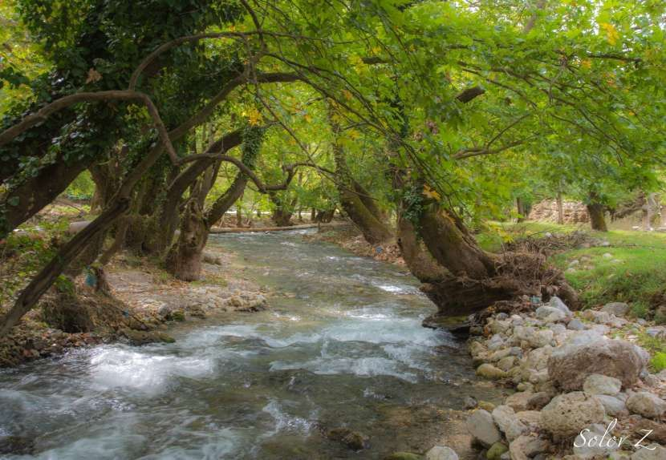
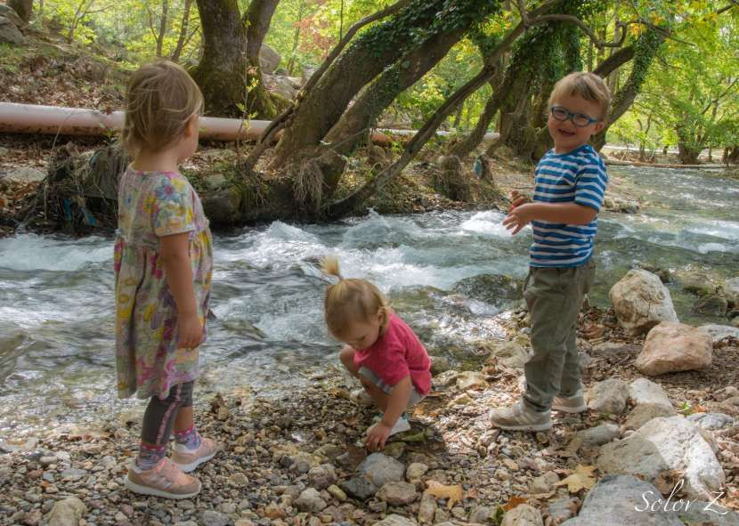
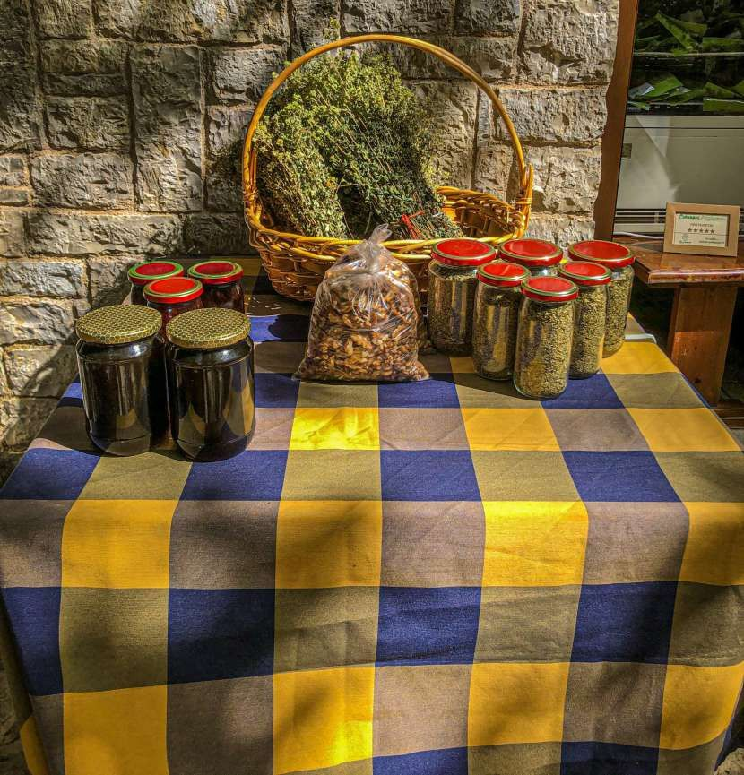
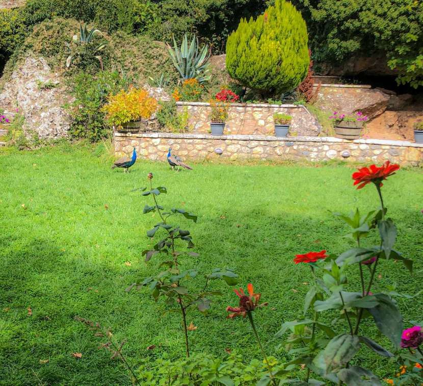
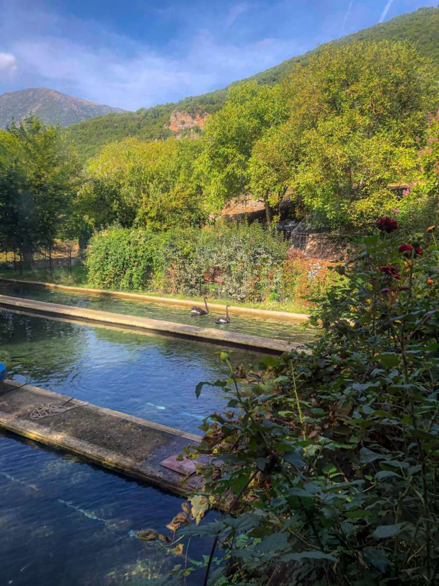
משם החלטנו לחזור בדרך אחרת ולא זאת שבאנו- דרך קלאבריטה לכיוון דיאקופטו והחוף, בדרך עצרנו לתצפית על מנזר ה-Great cave monastery אבל בגלל שהצוציקים היו בשנ"צ עמוק לא עצרנו במקום. הנסיעה היתה יפה מאוד, הרים נישאים והים המבצבץ בהמשך. חזרנו בחמש בערב, מזג האויר הנפלא שליווה אותנו מהבוקר התקלקל מאוד והתחילו רוחות חזקות וטפטוף ככה שאת המשך הערב העברנו בדירה הענקית שלנו, מחר חוזרים למזרח הפלפונז.
לסיכום בילינו את היום בעיקר ברכב, אמנם הנסיעות לא ארוכות אבל מאוד מתישות, ובדיעבד אולי עדיף היה לוותר על מערת האגמים ופשוט לטייל בעיירות בסביבה ולמצוא איזה מסלול הליכה נחמד באיזור.
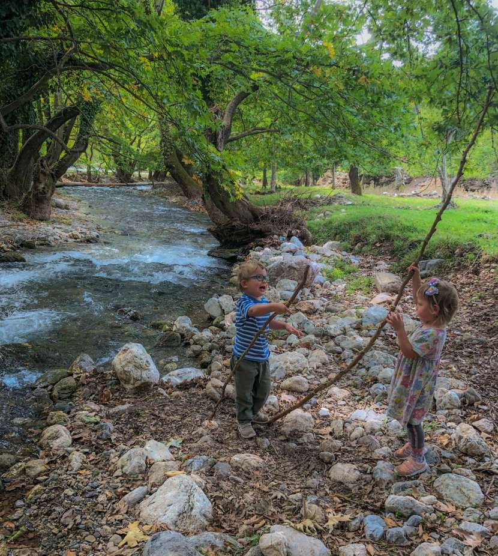
8.10- עיירת סירות
קמנו לבוקר סגרירי מאוד, גשם מטפטף, אבל הנוף מהחלון היה פשוט עוצר נשימה! עננים מכסים את רכסי ההרים והים המבצבץ, סוף סוף נגמר האובך שהיה בימים שהיינו פה ועכשיו באמת אפשר להעריך את הנוף היפה. בעוד שאנחנו מכינים ארוחת בוקר, הנה צצה לה קשת מקסימה.
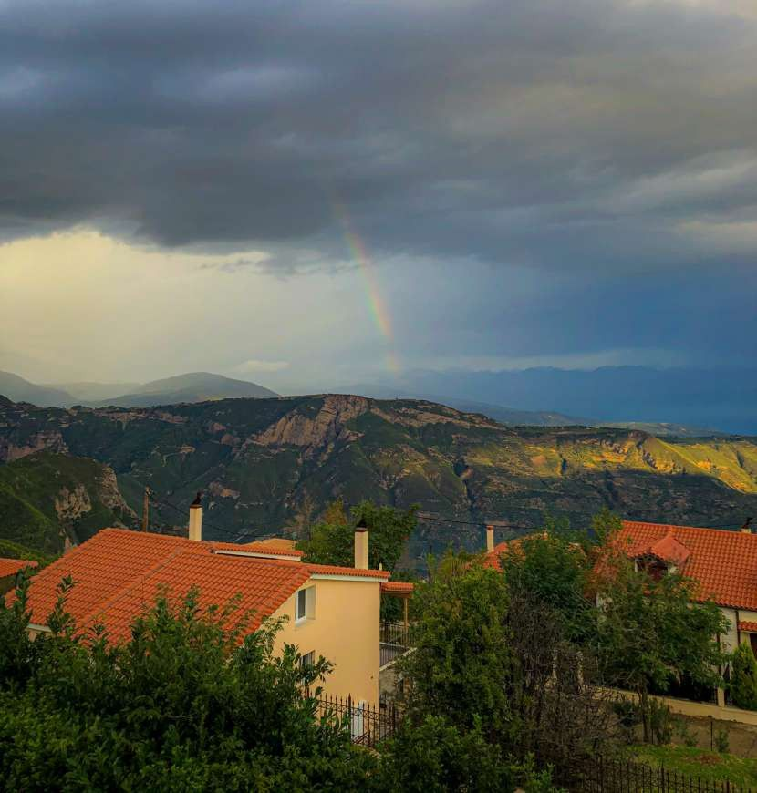
לקחנו את הזמן והתארגנו בנוחות, הילדים ירדו לקומת המרתף לשחק ואנחנו העמסנו את כל התפוחים הטעימים שלא הצלחנו לסיים עד כה לרכב. עוד הצצה בתחזית מראה לנו שהחלטנו נכון לחזור לצד המזרחי כי בכל האיזור המערבי (בדגש על לפקדה) צפוי גשם בימים הקרובים.
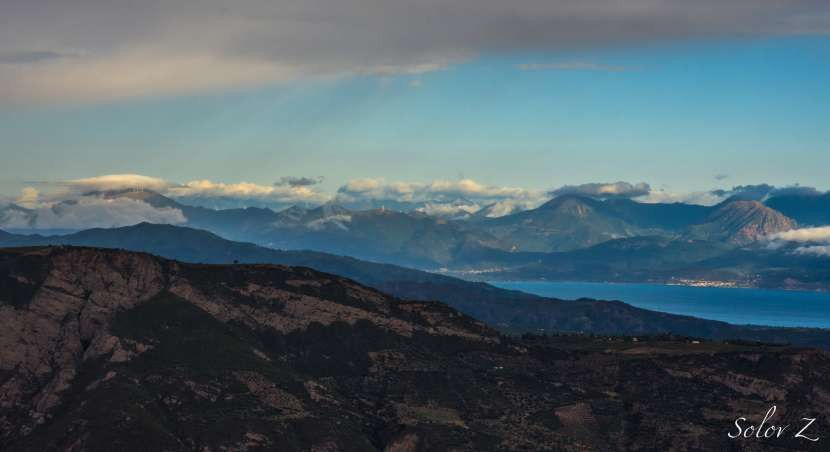
עלינו על הכביש המהיר לכיוון מזרח (אגרה) והתחלנו בנסיעה. תכננתי לעצור באיזור קורינתוס ליד אחד החופים אבל כשעצרנו הכל מסביב היה די נטוש אז המשכנו קצת הלאה והנה הטרור נרדמו, לכן כבר נסענו ישירות לקילדה העיירה שזה אנחנו נהיה ב-4 ימים הקרובים.
עם התקרבותינו לעיירה הכביש עובר ממש ליד החוף, ואנו חולפים על פני כנסיה לבנה עם גג תכלת אשר צופה על מפרץ קילדה- המים בצבע תכלת משגע ובמפרץ אין סוף סירות דייגים קטנות. העיירה קילדה מפורסמת בעונת התיירות בעיקר בזכות מאכלי הים שלה וכן העיירה מהווה משכן למספנות והאנגרים של תיקוני סירות.
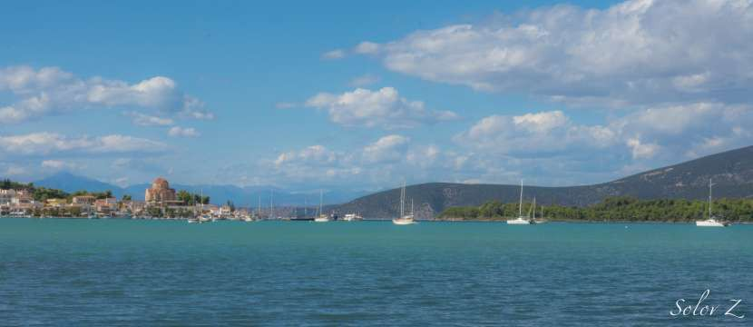
בשעה 14:00 אנחנו מגיעים לדירה שלנו ל-4 הימים הקרובים- וילה LOY LOY, וילה פשוטה ויפה עם בריכה ומספר מתקנים לילדים, מחיר סביר וגם הביקורות בבוקינג מהללות, אולם בעלי הדירה (זוג נחמד) גר ממש מתחת למתחם (לנו זה קצת הפריע, כי הרגיש שמישהו בוחן אותך כל הזמן). לוילה היו עוד חסרונות שלא צוינו בביקורות כמו מים לא ראויים לשתייה בברזים (מלוחים כלכך שאפילו הכלים במדיח לא יוצאים נקיים), לכן גם מי הבריכה עכורים שומניים ולא נעימים, והוילה עצמה לא היתה כלכך נקיה, שפע נמלים במטבח, הרבה אבק בחדרים, לא הרמה שהתרגלנו אליה.
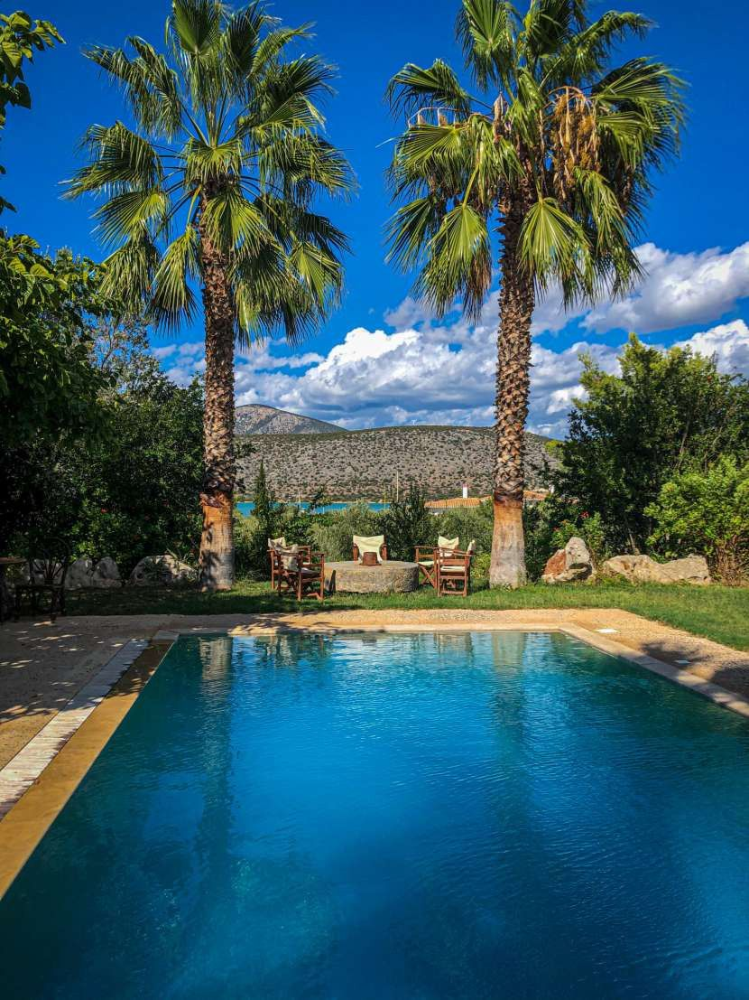
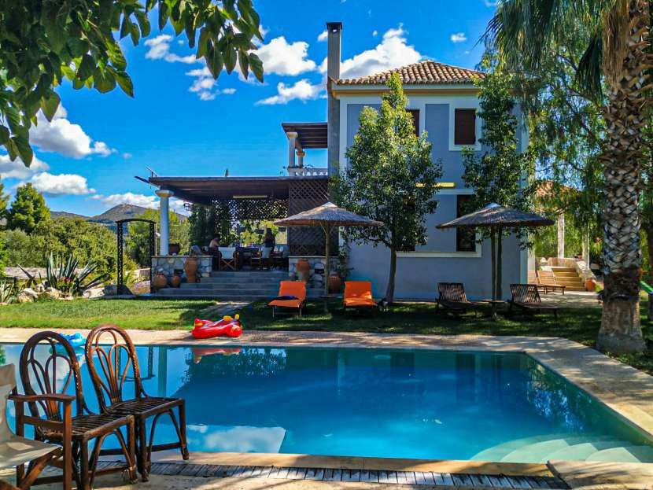
היינו מורעבים אחרי הנסיעה הארוכה, אז נסענו לעיירה לחפש לנו מסעדה טובה, אולם להפתעתינו הרבה נתקלנו בעיירת רפאים, הכל סגור ושומם! לבסוף מצאנו מסעדה קטנה בכניסה לעיירה בה האוכל היה מזעזע (הכל מוקפא ומופשר) אבל צריך לאכול לא? אגב, את התמנון שהזמנו אפילו החתולים לא רצו לאכול...
משם קפצנו להצטיידות בסופר (יש סניף LIDL ממש קרוב לשם) וחזרה לוילה. את הערב העברנו עם הקטנים בבריכה (שאגב היתה ממש ממש עמוקה ומאוד מסוכנת לקטנים! בדיעבד לא הייתי ממליצה על הוילה, בעיקר כי בניגוד לוילות הקודמות עם הבריכה, הבריכה היתה בצד ולא תפסה את כל השטח בחוץ, כאן לעומת זאת הבריכה ממש במרכז החצר ופשוט כל הזמן כשהיינו בחוץ שמנו לקטנים מצופים כי נורא חששנו שפשוט יחליקו ויפלו פנימה, וכמובן שמונה עיניים כל הזמן עליהם כשהם בחוץ, לא נשארו רגע לבד).
יום ארוך של נסיעה הגיע לקיצו, מחר שוב נתפנאן לנו בים.
יום 9- ים ועיירת דייגים
אחרי ארוחת בוקר טעימה על הורנדה בחוץ, אנחנו פותחים את הבוקר על חוף הים שהומלץ לנו ע"י בעלי המקום- ח וץ ליפיצה (Paralia Lepitsa), מדובר בחוף חביב שתי דקות נסיעה מהוילה בקצה העיירה קילדה. החוף ממש מסודר עם מיטות ושמשיות אך בעונה זו של השנה הוא שומם, איזה כיף לנו!
אנחנו מתמקמים בנקודה שמשית, כי בצל די קריר בתשע בבוקר), הצוציקים מיד רצים למים לבדוק את אקדחי המים שלהם. החוף הזה מומלץ במיוחד עם הילדים כי הוא מאוד רדוד והמים פשוט צלולים צלולים, צריך ללכת די הרבה כדי להגיע למים עמוקים.
וכך אנחנו מבלים להנאתנו בחוף, נהנים לראות סרטנים קטנים בין הסלעים, סירות דייגים שמגיעות לתפוס שלל יומי, העיקר כיף לקטנים!
בדרך חזרה נפרשת לפנינו העיירה קילדה עם המים הטורקיזיים שלה ואין סוף סירות הדייגים, מחזה משגע.
בזמן שהצוציקים ישנים שנ"צ בוילה, אנחנו המבוגרים חזרנו להיות ילדים ועסוקים בקפיצות לבריכה המאוד עמוקה בוילה.
אחר הצהריים, אנחנו נוסעים לעיירה ארמיוני, בעיקר כי אנחנו רוצים לבדוק לגבי שיט מחר לאי הידרה וגם כי שם בטח יש מסעדות נחמדות שפתוחות (בכל זאת עיירה גדולה יותר מקילדה השוממת).
בסך הכל 12 דקות נסיעה ואנחנו בארמיוני, חונים ליד הנמל, ומיד קופצים לחנות ליד לברר על הפלגות, אז לא חסר, יש הפלגות להידרה למחר ב-10:00 וחזרה ב-15:00 בסירה christos passenger ferry, עלות 7.5 יורו לכרטיס (כרגיל הצוציקים פתורים), ואפשר לקנות כרטיסים מחר כלומר ביום ההפלגה.
בסמוך יש חנות מזכרות אז אנחנו קופצים לשם, צריך מגנטים לא? וגם קרוקס לצוציקים שיהיה להם נוח להתרוצץ בחופים. מצוידים בהמלצה למסעדה טובה (Maria's) מבעל החנות שהשארנו אצלו סכום לא מבוטל, אנחנו יוצאים לסיבוב בנמל העיירה.
אין ספק שארמיוני היא עיירה חיה בהשוואה לקילדה, יש שפע מסעדות וכולן פתוחות (אמנם לא מלאות אבל זה רק יתרון מבחינתנו), אנחנו ממשיכים לאורך הטיילת המקסימה נהנים ממראה הסירות והשמש השוקעת לאיטה. המסעדה- Maria's all day cafe restaurant, נמצאת ממש בהתחלה של הטיילת, התמקמנו לנוחיותינו ופשוט נהננו מאוכל טעים ממש (בין הטעימים בטיול הזה) לא יקר ונוף משגע של שקיעה. האווירה במקום כלכך נעימה שמצאנו את עצמנו יושבים שם כשעתיים, אפילו הצוציקים נהנו להתרוצץ ולהסתכל על סירות ולשחק בטרקטורים החדשים שלהם (מה לא עושים בשביל קצת שקט).
שבעים בקושי מסוגלים ללכת לרכב (התגלגלנו לשם ליתר דיוק), אנחנו חוזרים לוילה שלנו אחרי עוד יום מוצלח. בוילה חיכה לנו אורח קטן- צפרדע חמודה קפצה לביקור וחיכתה בפתח הדלת, הצוציקים מאוד נהנו להגיד לה שלום.
יום 10- הידרה
היום אנחנו שטים לאי הדירה איזה כיף!
קצת על הידרה- מדובר באי ארוך וצר מול חופי דרום יוון, בין מפרץ סרוני למפרץ ארגוליס. בשל הגישה הקלה והנוחה לאתונה, בירת יוון, מהווה האי יעד חופשה פופולרי לתושבי אתונה ולתיירים זרים. באי אסורה תנועת רכב ממונע, למעט מספר קטן של משאיות קטנות לצורכי תחזוקה, והתחבורה בו מבוססת על פרדות וחמורים. מאות ה-18 וה-19 היה האי למרכז סחר ימי חשוב והתגוררו בו מספר רב של סוחרים עשירים. בתי המידות שלהם, הבנויים מאבן בסגנון ערי המסחר של איטליה (ונציה, ג'נובה וכדומה) מקיפים עד היום את הנמל. סוחרי האי התעשרו כתוצאה מפעולה על הקו הדק שבין מסחר לגיטימי לבין הברחות ושוד ימי. הקלות היחסית לבצר את הנמל ולמנוע גישה לאי הפכו אותו למעוז של חיים עצמאיים יחסית, שהתייצבו מול חוקי השליטים העות'מאניים. התותחים הישנים עדיין מופנים מחומות הנמל אל מול הים. במהלך מלחמת העצמאות של יוון נידבו סוחרי האי, בהשראתה של לסקרינה בובולינה, ספינות לצי המורדים בממשל העות'מאני והצי היווה גורם חשוב בהצלחת המאבק. גיבור המלחמה בן האי, גיורגוס קונטוריוטיס, כיהן כראש ממשלת יוון בשנת 1848. בשנות ה-60 וה-70 של המאה ה-20 "גילו" את האי ידוענים ועברו לגור בו לתקופות קצרות או ארוכות. בהם השחקנית סופיה לורן והזמר לאונרד כהן. (נלקח מתוך ויקיפדיה).
החלטנו לקחת את המעבורת של 10:00- כדי שיהיה זמן להתארגן בבוקר בנחת, ובחזרה ראינו שיש מעבורות ב15:00 וגם ב-17:00 ככה שיש לנו שפע זמן לטייל באי. בתשע וחצי חנינו שוב ליד הנמל בארמיוני והלכנו לקנות כרטיסים (7.5 יורו לאדם לכיוון), ומשם הלכנו לרציף 2 שם עגנה הסירה שלנו Christos. יש הקפדה על כללי הקורונה, כולם עם מסיכות על הפנים. חוץ מאיתנו היו עוד כמה תיירים על הסירה.
הפלגה נעימה בת חצי שעה במהלכה הצוציקים היו בעננים מזה שהם שטים בסירה, ונכנסנו לנמל הדירה המהמם! אין מילים לתאר איזה יפה הוא- אז הנה כמה תמונות.
וככה עם שמש הבוקר המאירה את המים הכחולים והצלולים אנחנו נכנסנו לנמל הדירה עם שפע הסירות והיאכטות העוגנות בנמל. התלבטנו בין שיט להידרה או לאי ספטצס, הדירה ניצחה בעיקר כי אין כאן רכבים מה שאפשר לצוציקים לרוץ חופשיים מבלי חשש להידרס.
מיד כשיורדים מהנמל אנו רואים חמורים שעומדים לקחת תיירים ברחבי האי (אנחנו קצת נגד זה אבל הצוצקיים נהנו ללטף אותם), סביבנו בניינים בבניה איטלקית טיפוסית, הרחוב מלא בתיירים (לא רוצה לחשוב מה קורה פה בשיא עונת התיירות וללא הקורונה). אנחנו החלטנו להתחיל את הטיול בקפה ומוצאים בית קפה חמוד בצד השני של הנמל, הצוציקים נהנים להבריח את שפע היונים שבמקום (איטליה אמרנו?).
שבעים ורעננים התחלנו לצעוד בין הסמטאות היפות של האי מתפעלים כל שניה מהיופי. בשלב מסויים החלטנו לקנות בגד ים (כי לא לקחנו) והמים כלכך מזמינים! זה הזמן לציין שבהידרה אין חופים (יש אבל בקצה השני של האי שניתן להגיע לשם בסירה), מה שיש זה חופים מאולתרים של צוקים- כלומר יש מדרגות שמבילות ישר לתוך המים העמוקים.
כאן התפצלנו, אנחנו הבנות הלכנו לחפש לנו בגדי ים- מצאנו כעבור חצי שעה, והבנים בינתיים שוטטו בין החנויות. התחלנו להתקדם לכיוון החוף הצוקי הראשון אבל הצוציקים שלנו היו במצב רוח קרבי, אין סיכוי שהיינו יכולים להשאיר אותם עם הורה אחד בזמן שהשני שוחה כך שלצערנו ויתרנו על טבילה במים המדהימים האלה (נשאיר את זה לחופשה זוגית באחד הימים) והמשכנו לטייל באי, צעדנו עד הצמודה ראינו את התותחים וחזרנו חזרה לסמטאות היפות לחפש לנו מסעדה לצהריים.
המחירים בהידרה הם לא המחירים ביוון, ראו הוזהרתם, הכל יקר! אכלנו במסעדה די רגילה שאין לי מה לכתוב עליה, ומשם כשהצוציקים כבר גמורים מעייפות (בכל זאת מתרוצצים מהבוקר בסמטאות) הגענו למעבורת שלנו חצי שעה לפני הזמן ופשוט נתנו להם לחקור את הסירה.
חזרנו לארמיוני ואחרי הצטיידות בסופר המקומי המשכנו לוילה לבילוי בבריכה, וכך נגמר עוד יום מושלם.
11.10- עוד יום של רביצה על החוף
היום יש לנו עוד יום רגוע בסביבת קילדה לפני שנעזוב את החלק הזה של יוון. מסקירה מהירה באינטרנט ראינו שיש מערה ממש יפה בסביבה ומאוד מיוחדת- Franchthi Cave אולם היא דורשת קצת הליכה מאומצת ולא בטוח שמתאימה לצוציקים או לבנים שלנו שרק רוצים לרבוץ, למזלנו אחרי שהוטל וטו פה אחד מצד הבנים על המערה, ראינו שיש ליד חוף יפה (בתמונות) עם הרבה המלצות, אז הנה היעד היומי חוף- Παραλία Λαμπαγιαννά. עשר דקות נסיעה ואנחנו שם, לבד לבד, רק אנחנו והחוף השקט והמים הכחולים. החוף ממש יפה אבל לא מסודר, יש המון דשא במים (מזל שיש נעלי ים), מצד שני הוא ממש טבעי, תחושה של פנינה בטבע!
מי שעושה טיול במערה מגיח בסוף לחוף היפה הזה, וגם מהחוף ניתן ללכת למערה, אבל זו הליכה של כ20-30 דקות.
העברנו בחוף היפה הזה 3 שעות בכיף, בגלל שהיום יום, התחילו להגיע אנשים לפיקניקים במקום (כשעזבנו לקראת 12:00), ראינו גם כמה קראוונים חונים בסביבה ככה שמזל שבאנו מקודם והיה לנו את החוף לעצמנו.
בדרך חזרה עצרנו לצלם את הכנסיה הכחולה והיפה בדרך לקילדה, והנה תפסנו גם דייג מקומי :)-
אחרי שנת צהריים החלטנו לפנק את הקטנים בזמן כיף בפארק שעשועים שראינו בקילדה ממש בכניסה לעיירה, בגלל שהם משכו שנ"צ עד מאוחר החלטנו לאכול מאוחר במסעדה האהובה עלינו בארמיוני, אז יש לנו שעה לשרוף בכיף, ומגיע להם אחרי 11 ימים של ים וטבע קצת ציווליזציה ופארקי שעשועים. הפארק מאוד מושקע, שפע של מתקנים והנוף של מפרץ קילדה מעבר לכביש פשוט משגע!
הם כלכך נהנו שם שהיינו ממש צריכים לגרור אותם משם כדי שנספיק למסעדה לשקיעה. וכך היה, הגענו ל-Maria's בדיוק בשקיעה וזכינו לעוד תמונות נפלאות של המקום. כמו קודם נהננו מאוד במקום והעברנו שם בכיף שעתיים שלמות. שבעים ומרוצים חזרנו לוילה, לילה אחרון, מחר עוזבים את הפלפונז.
12.10- ביי ביי פלפונז, שלום לותראקי
קמנו לעוד בוקר יפה, התארגנו בנחת, ארזנו את כל הציוד שלנו לקראת המעבר לדירה האחרונה שלנו לטיול הזה.
לימים האחרונים החלטנו לקחת וילה שתקצר לנו את הנסיעה לשדה התעופה אבל שתהיה עדיין במקום יפה, וכך מצאנו את וילה- Villa Christina Luxury- skaloma, וילה מקסימה על חוף הים, חצי שעה מערבית מלותראקי. בכל זאת מדובר הנסיעה של שעתיים וחצי אז כדי לא לבלות את כל היום ברכב, החלטנו לעייף את הצוציקים בפארק השעשועים ולנסוע על השנ"צ שלהם.
יום שני בבוקר, העיירה קילדה ממש נטושה, מצד שני הפארק כולו לעצמנו, ואיזה כיף לצוציקים שפשוט עוברים ממתקן למתקן בהנאה גדולה בזמן שאנחנו שותים קפה לא כלכך טעים מאחד הקיוסקים שליד.
שוב יוצאים לדרך באותו הכביש שנסענו כבר פעם רביעית עד לעיירה קורינתוס, חולפים מעל התעלה (חבל שלא עצרנו לצלם כאן אבל הצוציקים נרדמו אז לא רצינו להעיר אותם). רבע שעה אחרי קורינתוס נכנסנו ללותראקי- עיירת הקזינו, באמת נראית כמו אילת וחסרת כל ייחוד. משם אנחנו ממשיכים לאורך הכף המערבי של מפרץ קורינתוס לכיוון האגם הכחול והעיירה סקלומה שם נמצאת הוילה שלנו.
האיזור מלא בהרים ירוקים מתנשאים ושדות של עצי זית מכל כיוון. אם חשבנו שההגעה לוילה בפורטו היילי היתה מאתגרת, הוילה הזו ניצחה בגדול! לא מספיק שגוגל לוקח אותנו לפניות לא קיימות, עד שכן מצאנו את הפניה הכביש פשוט צר כך שבקושי רכב אחד עובר ולא רק זה יש שם סיבובים חדים שעוד רגע אתה נכנס לגדר של וילה אחרת ולקינוח קטע שלם של סיבוב בכביש צר שאם אתה סוטה מעט ולוקח סיבוב גדול מידי אתה בים! בלי שום גדר או מעקה תענוג! (אבל גם לזה מתרגלים כי בסוף נסענו את זה גם בלילה).
וככה הגענו אל הוילה, וילה מקסימה עם טרסה ענקית לצוציקים לרוץ וחוף ים משגע- רק מלא בקיפודי ים אז נעליים חובה!
אלתרנו ארוחת צהריים זריזה ובגלל שהצוציקים ישנו כבר ברכב החלטנו לנצל את מזג האויר היפה ולבדוק את החוף הפרטי שלנו, מצויידים בנעלי ים ומזרון מתנפח באדיבות בעל הוילה ירדנו לחוף.
המים פשוט מדהימים! שקופים לגמרי ככה שממש ניתן לראות כל קיפוד וקיפוד ואין ספור דגים ששוחים סביב. הצוציקים זכו לסיבוב על מזרון הים ואנחנו זכינו לטבילה מרעננת.
אבל המקרר ריק, וצריך להצטייד, אז עד כמה שהוילה חלומית יש לה לא מעט חסרונות: 1. אין וייפיי- סיבה טובה לגמור את החבילה שקנינו בשדה. 2. הסופר הכי קרוב (חצי הדרך ללותראקי) סגור!- גילינו את זה כשהגענו לשם אז הצטיידות יש לעשות בלותראקי. 3. מסעדות- מגוון מאוד מצומצם במרחק נסיעה (3!) כל השאר רק בלותראקי.
למזלנו באמצע הדרך מלותראקי יש מסעדה מאוד יפה- Taverna Edem (ליד מסעדה גדולה בשם פאנורמה סגורה). אז אחרי שהצטיידנו בסופר בלותראקי עצרנו בטברנה EDEM לארוחת ערב. המקום ממש מקסים ומיוחד, מצד אחד פשוט מצד שני נוף משגע במיוחד בשקיעה על מפרץ קורניתוס. האוכל מאוד טעים ולא יקר.
שבעים ומצויידים באספקת אוכל אנחנו חוזרים בחושך מוחלט לוילה- היה מאתגר, פספסנו כמה פניות, עשינו כמה סיבובי פרסה, נסענו ממש לאט ובמזל גדול לא נפלנו לים!
13.10- יום חורפי
בלילה היתה סופה וגם הבוקר נראה סגרירי, אמנם לא יורד גשם אבל בהשוואה לימי הקיץ שליוו אותנו כל הטיול די קריר היום. אין לנו תוכניות מיוחדות אז אנחנו נשארים לבלות בוילה. ירדנו לטייל בחוף שבזכות הסופה נסחפו אליו המון מקלות במבוק ובולי עץ קטנים, הצוציקים נהנו לטבול רגליים ולזרוק דברים לים. טיילנו קצת לאורך החוף, הקטנים טיפסו לסירות דייגים שונות שמצאו, שיחקנו בדשא שבחוץ ובגדול פשוט נחנו.
מזג האויר השתפר, כך שבזמן השצוציקים שנצנצו הם, הגדולים נהנו מטבילה במים הקרירים. אחרי שנת צהריים התארגנו והחלטנו ללכת לבדוק את האגם הכחול שנמצא בסביבה. האגם נקרא- LIMNI VOYLIAGMENIS LOUTRAKI, שימו לב לא לבלבל עם האגם בעל השם הדומה שנמצא באתונה.
האגם נוצר משקיעת הקרקע אורכו 2 ק"מ ורוחבו 1 ק"מ, ועומקו מוערך בכ- 40מ', ישנה תעלה של 6 מ' שמחברת את האגם למפרץ קורינתוס ולכן מימיו מלוחים. האגם נמצא ממש ליד הוילה (5 ק"מ) אולם בגלל תוואי השטח הנסיעה אליו לוקחת 15 דקות. הנופים סביב האדם כלל לא מזכירים את יוון אלא יותר את האווי, הרים ירוקים מכוסים בצמחייה, האגם עם מי הטורקיז, צורת ההרים המזכירה הר געש (לנו זה הזכיר את ההר טה-פיטי מהסרט המצוייר מואנה של דיסני, שהצוציקים רואים בלופ אינסופי). הגענו למקום לקראת השקיעה התמקמנו בצד המערבי שלו בחוף LIDO Margetis Beach, מדובר בחוף מסודר עם שמשיות וטברנה (שנראתה סגורה), דייג בודד עמד על המזח וכמה כלבים שוטטו לידו (אחד מהם אפילו גנב לו את הלחם), הנוף פשוט משגע, כמו גלויה ממקום טרופי. הצוציקים מיד חלצו נעליים ורצו לטבול רגליהם בחוף, בהמשך נהנו מזריקת אבנים. טיילנו קצת סביב האגם, צעדנו על המזח עם פסל בת ים עשויה מרשתות דייגים, מקום מדהים! החלטנו שחוזרים לכאן באחד הבקרים לשחיה (עכשיו רק מידי).
הצוציקים מצאו להם עוד סירת דייגים לטפל עליה ולשחק בה. התחלנו להיות רעבים, בעל הוילה אמר שיש מסעדות דגים סביב האגם, אחת לידינו נראית ריקה לגמרי אז החלטנו לנסות מזלנו בצד השני של האגם- המזרחי, גם שם השיממון חוגג אבל אנחנו רעבים אז פשוט עצרנו בראשונה והזמנו את האוכל, הדבר היחיד שהיה טעים שם זה הברבוניות המטוגנות. טוב, מחר אוכלים שוב על האש בוילה.
14.10- על הקצה
יום שמש חם מקדם את פנינו, היום לשם שינוי במקום לנסוע ולחפש חוף יפה, יש לנו אחד כזה ממש מתחת לבית לכן שמנו בגדי ים וירדנו לחוף המהמם שלנו, שחינו, שיחקנו, קפצנו בקיצור די רבצנו ונהננו.
בזמן שהקטנים ישנו שנ"צ הגדולים המשיכו לרבוץ על החוף. אני מצאתי שביל שמוביל להר למעלה והנוף משם היה פשוט עוצר נשימה- הנה כמה תמונות.
כשהצוציקים התעוררו החלטנו לנסוע למגדל אור שנמצא בקצה המערבי של הכף, שקיעה זה זמן מצוין לתצפיות מגדלאור. המקום נקרא- Cape Melagkavi. שוב נוסעים לכיוון האגם, ועוברים אותו, כחמש דקות משם מגיעים לאתר של הריסות מקדש הרה (Ireon) עם חוף מקסים ושם חונים. אם תרדו למטה ושמאלה תגיעו להריסות, מעלה וימינה זה למגדלאור. הליכה קלילה (לא שביל סלול אלא מסלולון) שהצוציקים עשו בלי שום בעיה, בכל רגע וסיבוב נגלה נוף מדהים של ים כחול עד שלבסוף צץ לו המגדלאור בקצה הכף. המגדלאור נבנה ב-1897 בגובה של 13 מ' וצופה על מפרץ קורניתוס. המקום ממש יפה במיוחד בשעות הערב אז השמש מתחילה לשקוע והכל נראה הרבה יותר מרשים ודרמטי.
אנחנו עומדים גבוהה על צוק מסביבנו רק סלעים וים כחול כחול מחזה מדהים.
משם ירדנו לכיון הריסות מקדש הרה ולחוף (כבר היה קר מידי לשחות א רק הסתכלנו) ומשם עלינו חזרה כדי לנסוע לוילה להכין על האש (כבר אמרתי שאין באמת מסעדות בסביבה), נכנסים לרכב והפיצקה מתחילה לבכות איפה הדובי שלי? אוי ואבוי הדובי נעלם, אז כמו אמא גיבורה ירדתי שוב לחוף של ההריסות כדי לחפש את האבידה שבמזל נמצאה בדיוק במקום שהצוציקית עשתה פיפי, אז בסך הכל לעלות ולרדת את ההר בפעם השניה, בקטנה לאמא בכושר כמוני (NOT). בסף הכל הערבנו שם כשעה וחצי וזה באמת מספיק. חזרנו לוילה לעל האש אחרון בטיול הזה- צריך לסיים את כל הסטוקים של הבשר שקנינו לא?
15.10- האגם
היום זה היום המלא האחרון שלנו, מחר כבר נוסעים לשדה וטסים, אז למה שלא ננצל אותו באגם היפה שלנו? וכך היה, הגענו למקום מוקדם ממש- תשע בבוקר, חוץ מאיתנו והמסעדה שרק נפתחה לא היה אף אחד. התמקמנו בחוף המערבי- Margetis Beach, רק מה, אנחנו גוועים ברעב (לא נשאר הרבה לארוחת בוקר) אז קיווינו שיהיה משהו בחוף, היה, רק קפה! אז שלחנו את הבנים לקיוסק בצד השני להביא עוגיות ונשנושים.
האגם בשעות הבוקר לא פחות יפיפה משעות אחר הצהריים, ההרים מסביבו משווים תחושה של יעד טרופי (הוואי) מאשר יוון. המים צלולים ונעימים (פחות קרים מהים) וממש לא עמוקים בקרבת החוף. לאט לאט החלו להגיע למקום עוד אנשים וגם המסעדה נפתחה אז החלטנו לאכול שם צהריים, אוכל סביר, שוב הבורבוניות המטוגנות היתה המנה הכי טובה! האוירה במסעדה ממש נעימה, שקטה בלי הרבה אנשים עם נוף יפה.
לשם שינוי הפעם גם אנחנו שנצנצנו עם הילדים והיות והמקרר ריק נסענו שוב לטברנה EDEM לארוחת ערב (בדרך עצרנו בירקניה לקנות ביצים וירקות לחביתה למחר בבוקר).
צפינו בשקיעה האחרונה שלנו ביוון מהטברנה- שקיעה מדהימה! ולסיום התבשרנו בחדשות מצויינות- תם הסגר בארץ הגנים יפעלו החל מיום ראשון! איזה כיף, נוחתים מחר בשישי, נחים בשבת וקדימה לגן! איזו בריחה מוצלחת היתה לנו
16.10- הביתה!
בוקר של אריזות וארגונים, החלטתי לנצל את חיבתם של הצוציקים להר טה פיטי (ההר המתנשא באופק שהילדים החליטו שזו טה פיטי מהסרט מואנה) בכדי לגמול ממוצצים, בני שנתיים ועשר הגיע הזמן! צעדנו בגאווה לחוף וזרקנו את המוצצים לים לטה פיטי, איזה גאווה! (אגב זה הצליח, לא ביקשו יותר מוצץ ואמרו שטה פיטי נתנה אותו לתינוק אחר).
משם נסענו לשדה באתונה (שעה וחצי נסיעה בכביש אגרה נוח למדי- אותו אחד שנסענו בו לפני 16 יום כשהגענו). חוזרים לארץ בתחושה של הצלחה! העברנו את הסגר חופשיים, הילדים לא השתגעו בבית אלא טיילו בטבע, שחו בים וקיבלו שפע זמן אבאמא, וגם אבאמא קיבלו קצת זמן שפיות עם הילדים ללא הטירוף של עבודה וילדים המשתגעים בבית בלי מסגרות!
מי יתן ונחזור לטייל כמו פעם!
תודה שקראתם :)